<!doctype html>
<html lang="en">
<head>
  <meta charset="utf-8">
  <meta name="viewport" content="width=device-width, initial-scale=1">
  <title>arxiv digest — 2026-08-08</title>
  <style>
:root {
  --bg: #ffffff;
  --fg: #1f2328;
  --muted: #59636e;
  --border: #d0d7de;
  --card: #f6f8fa;
  --link: #0969da;
}
body {
  max-width: 980px;
  margin: 0 auto;
  padding: 2rem 1rem 5rem;
  font-family: -apple-system, BlinkMacSystemFont, "Segoe UI", Helvetica, Arial, sans-serif;
  line-height: 1.55;
  color: var(--fg);
  background: var(--bg);
}
a { color: var(--link); }
img { max-width: 100%; height: auto; }
pre, code { background: var(--card); border-radius: 6px; }
pre { padding: 1rem; overflow-x: auto; }
blockquote { border-left: 4px solid var(--border); padding-left: 1rem; color: var(--muted); }
details { margin: 0.6rem 0; }
summary { cursor: pointer; font-weight: 600; }
.paper-figures-scroll {
  display: flex;
  gap: 1rem;
  overflow-x: auto;
  overscroll-behavior-x: contain;
  padding: 0.75rem 0.25rem 1rem;
  margin: 1rem 0 1.25rem;
  border-top: 1px solid var(--border);
  border-bottom: 1px solid var(--border);
  scroll-snap-type: x proximity;
}
.paper-figure-card {
  flex: 0 0 min(260px, 72vw);
  scroll-snap-align: start;
  background: var(--card);
  border: 1px solid var(--border);
  border-radius: 12px;
  padding: 0.55rem;
}
.paper-figure-card img {
  display: block;
  width: 100%;
  max-height: 240px;
  object-fit: contain;
  background: white;
  border-radius: 8px;
}
.paper-figure-caption {
  display: block;
  margin-top: 0.5rem;
  color: var(--muted);
  font-size: 0.85rem;
}
.figure-strip-hint {
  color: var(--muted);
  font-size: 0.9rem;
  margin-bottom: -0.3rem;
}
</style>
  <!-- MathJax: renders $...$ inline math and $$...$$ display math, plus
       \(...\) and \[...\]. Loaded from the official CDN; works offline
       once cached. Configured to skip code/pre blocks so arxiv IDs that
       look like dollar amounts don't get mangled. -->
  <script>
    window.MathJax = {
      tex: {
        inlineMath: [['$', '$'], ['\\(', '\\)']],
        displayMath: [['$$', '$$'], ['\\[', '\\]']],
        processEscapes: true,
        processEnvironments: true
      },
      options: {
        skipHtmlTags: ['script', 'noscript', 'style', 'textarea', 'pre', 'code'],
        ignoreHtmlClass: 'tex2jax_ignore',
        processHtmlClass: 'tex2jax_process'
      }
    };
  </script>
  <script id="MathJax-script" async
    src="https://cdn.jsdelivr.net/npm/mathjax@3/es5/tex-chtml.js"></script>
</head>
<body>
<header style="background-color: #333; color: white; padding: 15px; margin-bottom: 20px;">
  <h1 style="margin: 0; font-size: 24px;">
    <a href="https://ochelpan.github.io/arXiv_clean/" style="color: white; text-decoration: none;">Main</a>
  </h1>
</header>

<h1>Daily arXiv Report</h1>

<hr>
<p>
<a href="index.html">← Index</a>
 · <a href="papers_03.html">← Previous</a> · <a href="papers_05.html">Next →</a>
</p>
<hr>

<h2>Papers 61–80</h2>
<p><a id="paper-2608.05740"></a></p>
<h3 id="improved-regret-bounds-for-structured-online-learning-of-quantum-states"><a href="http://arxiv.org/abs/2608.05740v1">Improved regret bounds for structured online learning of quantum states</a></h3>
<p><strong>Authors:</strong> Akshay Bansal, Jiahui Liu<br>
<strong>Type:</strong> theory · <strong>Category:</strong> quantum information and computing · <strong>PDF:</strong> <a href="https://arxiv.org/pdf/2608.05740v1">https://arxiv.org/pdf/2608.05740v1</a><br>
<strong>Analysis basis:</strong> full PDF text, analyzed in chunks
<strong>Topic relevance:</strong> <code>quantum measurements</code> <strong>3/5</strong> · <code>entanglement &amp; information structure</code> <strong>1/5</strong> · <code>measurement-induced transitions</code> <strong>1/5</strong> · <code>methods for driven-dissipative</code> <strong>1/5</strong></p>
<div class="figure-strip-hint">↔ Scroll figures horizontally</div>
<div class="paper-figures-scroll">
<figure class="paper-figure-card">
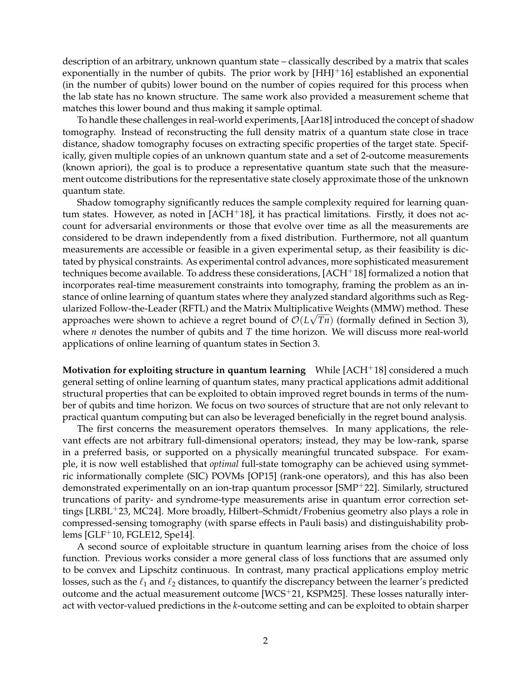
<figcaption class="paper-figure-caption"><b>Fig 1.</b> Low-resolution page preview, page 2</figcaption>
</figure>
<figure class="paper-figure-card">
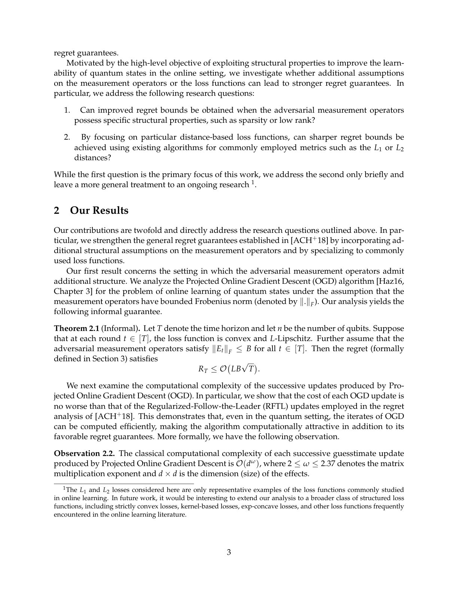
<figcaption class="paper-figure-caption"><b>Fig 2.</b> Low-resolution page preview, page 3</figcaption>
</figure>
<figure class="paper-figure-card">
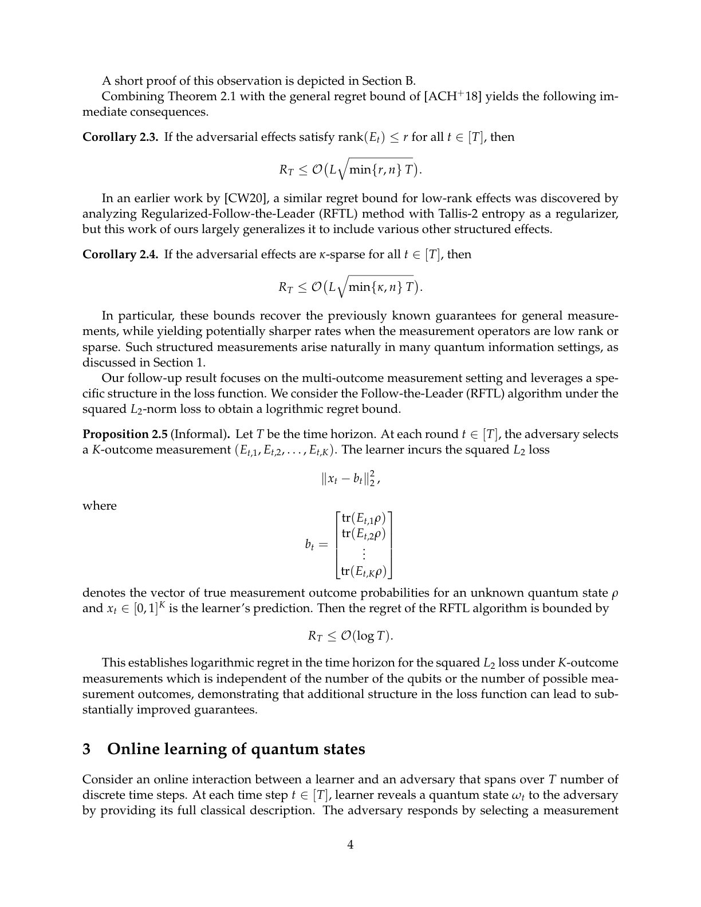
<figcaption class="paper-figure-caption"><b>Fig 3.</b> Low-resolution page preview, page 4</figcaption>
</figure>
<figure class="paper-figure-card">
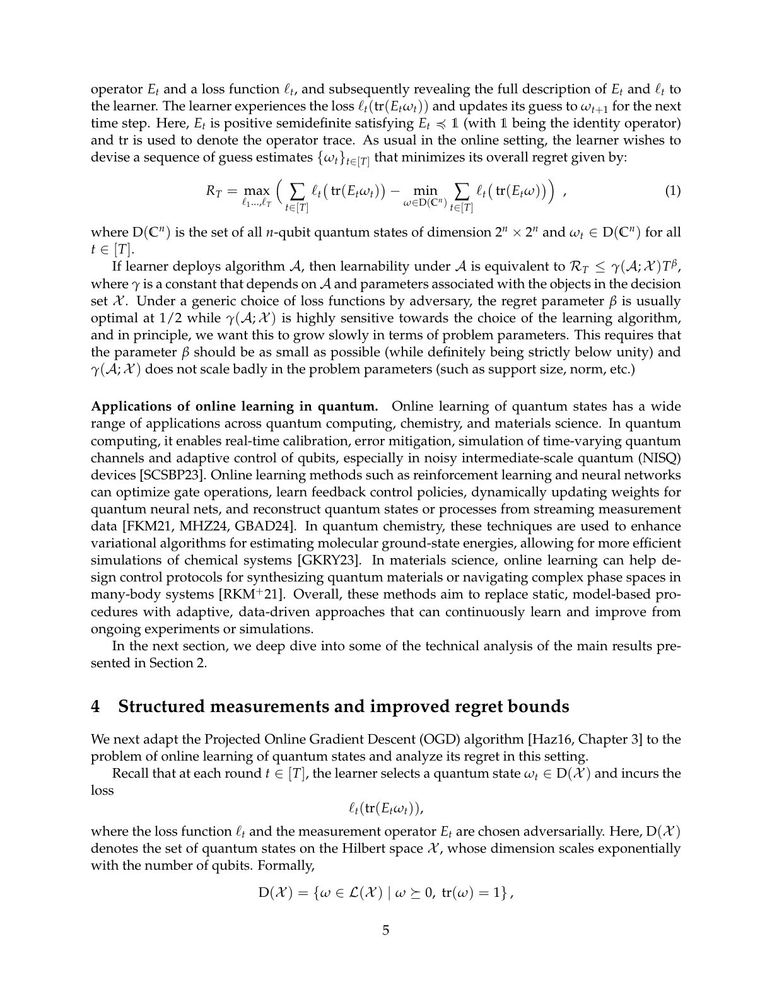
<figcaption class="paper-figure-caption"><b>Fig 4.</b> Low-resolution page preview, page 5</figcaption>
</figure>
<figure class="paper-figure-card">
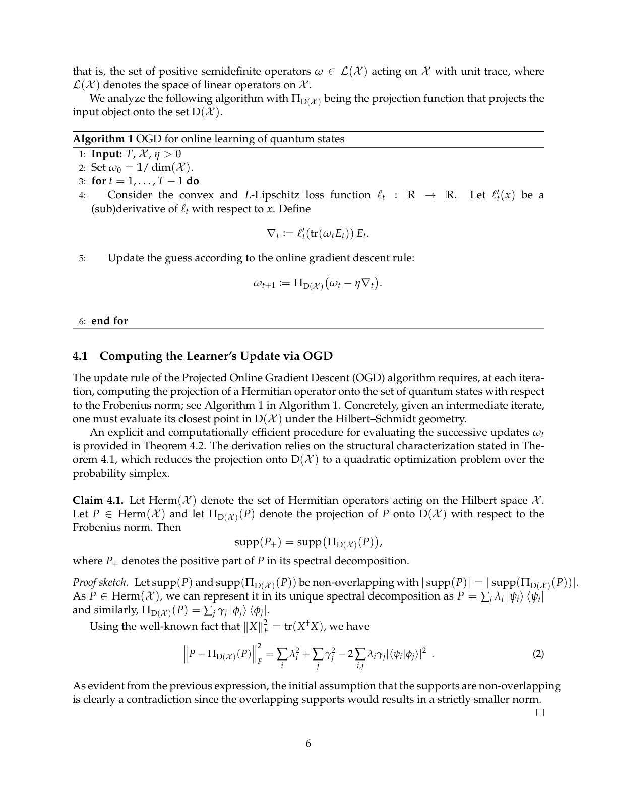
<figcaption class="paper-figure-caption"><b>Fig 5.</b> Low-resolution page preview, page 6</figcaption>
</figure>
</div>

<p><strong>Summary.</strong> This paper tackles the challenge of online quantum state tomography by analyzing how structural assumptions on measurements can drastically improve learning guarantees. Using advanced online optimization techniques like OGD, the authors derive regret bounds that depend on intrinsic properties (like rank) rather than the exponential Hilbert space dimension. The results show that under favorable conditions, the learnability of quantum states is significantly enhanced.</p>
<p><strong>Why it may be interesting.</strong> This work directly addresses the practical limitations of quantum state characterization by providing theoretically rigorous methods to achieve high accuracy with limited measurement data, which is crucial for building scalable quantum devices.</p>
<details>
<summary>Detailed structure</summary>
<p><strong>Main problem.</strong> The core problem is improving the regret bounds for online quantum state tomography, which is necessary because full state reconstruction is infeasible at scale.</p>
<p><strong>Main result.</strong> By exploiting structural assumptions on measurements (like bounded Frobenius norm or low rank), the achievable regret bounds are significantly improved compared to general settings. Furthermore, using squared L2 loss in multi-outcome measurements yields a logarithmic regret bound independent of system size.</p>
<p><strong>Method.</strong> The authors employ online learning frameworks, primarily Projected Online Gradient Descent (OGD) and Regularized Follow-the-Leader (RFTL), adapted for the constraints of quantum state space projection.</p>
<p><strong>Model / system.</strong> The model involves estimating an unknown quantum state $
ho$ over time $T$ using sequential measurements. The process is framed as an online learning task where the learner minimizes regret against an adversarial measurement sequence.</p>
<p><strong>Key observables.</strong> Regret ($R_T$), which measures performance relative to the best fixed quantum state in hindsight, and the predicted measurement outcomes.</p>
<p><strong>Important parameters / regimes.</strong> The structural properties of the measurements, such as bounded Frobenius norm ($\|E_t\|_F \le B$), low rank ($    ext{rank}(E_t) \le r$), or $\kappa$-sparsity.</p>
<p><strong>Assumptions / limitations.</strong> The analysis relies heavily on assuming specific structural constraints (low rank/sparsity) for the adversarial measurement operators, and assumes convexity and Lipschitz continuity of the loss function.</p>
<p><strong>Paper structure.</strong> The paper establishes the general online learning framework using OGD, derives bounds based on structural assumptions (Frobenius norm, rank), and presents a complementary result showing logarithmic regret for multi-outcome measurements under squared L2 loss.</p>
</details>
<details>
<summary>Abstract</summary>
<p>Quantum state tomography is fundamental to quantum information processing but becomes infeasible at scale due to the exponential growth of the state space. Shadow tomography alleviates this challenge by focusing on predicting measurement outcomes rather than reconstructing the full state. Its online variant models adaptive and potentially adversarial measurement scenarios, where a learner sequentially predicts outcomes while competing with the best fixed quantum state in hindsight.   We show that exploiting additional structure in the measurements leads to significantly stronger regret guarantees. In particular, under the assumption that the adversarial measurements have bounded Frobenius norm, we analyze Projected Online Gradient Descent and derive regret bounds that depend on intrinsic structural properties, such as rank or sparsity, rather than the ambient Hilbert space dimension. As a complementary result, we show that one can achieve logarithmic regret, independent of both the number of qubits and measurement outcomes, for multi-outcome measurements under squared $L_2$ loss. These results demonstrate that incorporating realistic structural assumptions can substantially enhance the learnability of quantum states in online environments.</p>
</details>
<p><sub><a href="#top">↑ back to top</a></sub></p>

<p><a id="paper-2608.05320"></a></p>
<h3 id="nitrogen-vacancy-centers-in-hexagonal-diamond-exhibit-long-coherence-times"><a href="http://arxiv.org/abs/2608.05320v1">Nitrogen Vacancy Centers in Hexagonal Diamond Exhibit Long Coherence Times</a></h3>
<p><strong>Authors:</strong> Gabriel Kumar, Siyuan Chen, Victor Wen-zhe Yu, Giulia Galli<br>
<strong>Type:</strong> theory · <strong>Category:</strong> quantum information and computing · <strong>PDF:</strong> <a href="https://arxiv.org/pdf/2608.05320v1">https://arxiv.org/pdf/2608.05320v1</a><br>
<strong>Analysis basis:</strong> full PDF text, analyzed in chunks
<strong>Topic relevance:</strong> <code>spintronics-quantum-optics interface</code> <strong>3/5</strong> · <code>QC/QI experiment</code> <strong>2/5</strong> · <code>Keldysh / 2PI / non-Gaussian methods</code> <strong>1/5</strong></p>
<div class="figure-strip-hint">↔ Scroll figures horizontally</div>
<div class="paper-figures-scroll">
<figure class="paper-figure-card">
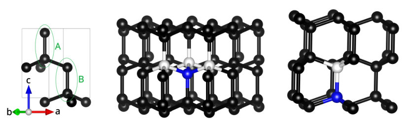
<figcaption class="paper-figure-caption"><b>Fig 1.</b> FIG. 1: Crystal structure of hexagonal diamond (lonsdaleite), with point group P63/mmc. (Left) The 4-atom unit cell, with experimental lattice parameters a = 2.51 Å and c = 4.12 Å, compared to a = 2.517 Å and c = 6.166 Å for cubic diamond when represented in a hexagonal lattice. The two pairs of carbon atoms aligned along the c-axis are labeled A and B. (Middle) The AB configuration of the NV center with the NV axis aligned along the bond connecting A and B. The three symmetry-equivalent orientations are shown. (Right) The AA configuration of the NV center with the NV axis aligned along a bond within A or B. Carbon, nitrogen, and vacancy sites are shown as black, blue, and white spheres,...</figcaption>
</figure>
<figure class="paper-figure-card">
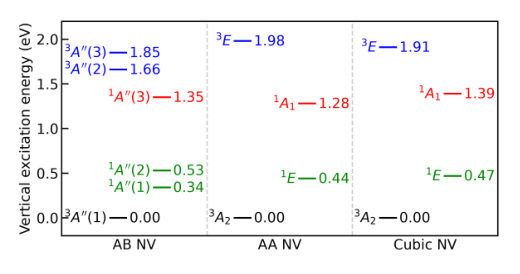
<figcaption class="paper-figure-caption"><b>Fig 2.</b> FIG. 2: Vertical excitation energies of NV centers in lonsdaleite and cubic diamond computed with the quantum defect embedding theory (QDET) (see text). The many-body states are labeled according to the irreducible representations of the defect point groups (Cs and C3v for AB and AA NV, respectively). States in the AA and cubic NVs with the same color have the same symmetry character. For the AB NV, the colors are the same as those of the corresponding states in the AA NV from which they split as the symmetry is reduced.</figcaption>
</figure>
<figure class="paper-figure-card">
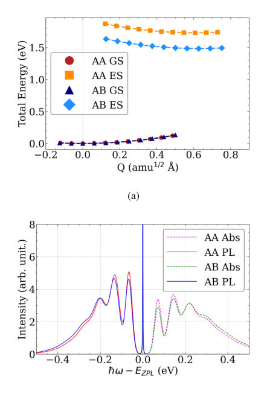
<figcaption class="paper-figure-caption"><b>Fig 3.</b> FIG. 3: (a) Configuration-coordinate diagrams obtained from ∆SCF calculations for the NV AA and AB configurations, showing the interpolation between the ground- (zero of energy) and excited-state geometries. (b) Simulated photoluminescence (PL) and absorption (Abs) spectra at T = 5 K, computed using the zero-phonon line and phonon modes extracted from the configuration-coordinate diagrams. The x-axis shows the energy shift relative to the ZPL energies of 1.48 and 1.73 eV for the AB and AA configurations, respectively. The fitting parameters are the same as those used for the NV center in cubic diamond18.</figcaption>
</figure>
<figure class="paper-figure-card">
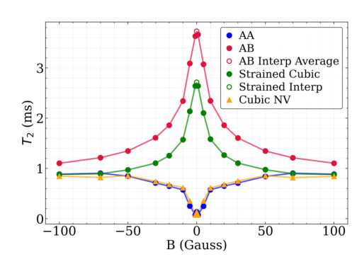
<figcaption class="paper-figure-caption"><b>Fig 4.</b> FIG. 4: Computed coherence time T2 as a function of the applied magnetic field for the AA and AB configurations in hexagonal diamond (lonsdaleite), the NV center in cubic diamond, and the NV center in cubic diamond with a 3% tensile strain applied along an N-C bond. For the AB configuration and the strained cubic diamond NV, the B = 0 data point is estimated by averaging the left- and right-biased linear and quadratic interpolations.</figcaption>
</figure>
</div>

<p><strong>Summary.</strong> The authors theoretically investigate NV centers in hexagonal diamond (lonsdaleite) to find better spin qubit candidates than those in cubic diamond. They found that a specific, symmetry-reduced configuration (AB) significantly enhances the coherence time ($T_2$) by leveraging its unique zero-field splitting properties. This establishes lonsdaleite as a promising material for quantum information science applications.</p>
<p><strong>Why it may be interesting.</strong> This work directly addresses hardware platforms for solid-state qubits by predicting enhanced coherence times based on crystal symmetry, which is crucial knowledge for designing robust quantum memory elements.</p>
<details>
<summary>Detailed structure</summary>
<p><strong>Main problem.</strong> To investigate Nitrogen Vacancy (NV) centers in hexagonal diamond (lonsdaleite) as potential spin qubits with enhanced coherence times compared to cubic diamond counterparts.</p>
<p><strong>Main result.</strong> The AB configuration of the NV center in lonsdaleite exhibits an approximate fourfold enhancement of the Hahn-echo coherence time ($T_2$) at zero magnetic field due to a finite transverse zero-field splitting.</p>
<p><strong>Method.</strong> First-principles calculations (DFT) combined with advanced quantum defect theory methods (QDET, gCCE) were used to model electronic structure and spin coherence times.</p>
<p><strong>Model / system.</strong> The study models negatively charged NV centers ($   ext{NV}^-$) in two configurations (AA and AB) within the hexagonal diamond polymorph lonsdaleite, comparing them against the established cubic-diamond NV center.</p>
<p><strong>Key observables.</strong> Hahn-echo coherence time ($T_2$), Zero-Field Splitting (ZFS) tensor components ($D$ and $E$), Photoluminescence spectra, and Debye-Waller factors.</p>
<p><strong>Important parameters / regimes.</strong> Zero magnetic field ($  ext{B}=0$), specific lattice configurations (AA vs. AB), and the magnitude of the enhancement factor (approximate fourfold).</p>
<p><strong>Assumptions / limitations.</strong> The study assumes that symmetry-broken centers in lonsdaleite are viable candidates, though calculating intersystem crossing rates for full optical cycle efficiency was beyond scope.</p>
<p><strong>Figures summary.</strong> Figures compare crystal structures and defect configurations; one figure shows energy splittings due to symmetry reduction (AB case); another compares PL/Abs spectra for AA and AB configurations.</p>
<p><strong>Paper structure.</strong> The paper systematically analyzes the electronic structure, coherence properties, and optical signatures of NV centers in lonsdaleite. It contrasts two specific defect symmetries (AA vs. AB) against the cubic standard to pinpoint the optimal configuration for quantum applications.</p>
</details>
<details>
<summary>Abstract</summary>
<p>We show that negatively charged nitrogen-vacancy (NV) centers in the hexagonal diamond polymorph lonsdaleite offer a route to spin qubits with enhanced coherence relative to their cubic-diamond counterparts. Using first-principles calculations, we examine two distinct defect configurations, AA, with the same symmetry as in cubic diamond and AB, with reduced symmetry. We find that the AB configuration of the NV center exhibits a finite transverse zero-field splitting, giving rise to an approximate fourfold enhancement of the Hahn-echo coherence time $T_2$ at zero magnetic field. The AA configuration, by contrast, closely reproduces the electronic structure and coherence properties of the cubic NV center. We further characterize the many-body electronic structure, vertical excitation energies, and photoluminescence spectra of both configurations, providing spectral fingerprints for their experimental identification. Our results establish symmetry-broken NV centers in lonsdaleite as promising candidates for quantum sensing and information science applications.</p>
</details>
<p><sub><a href="#top">↑ back to top</a></sub></p>

<p><a id="paper-2608.05378"></a></p>
<h3 id="maximally-entangled-states-are-not-complete-for-pseudo-telepathy"><a href="http://arxiv.org/abs/2608.05378v1">Maximally entangled states are not complete for pseudo-telepathy</a></h3>
<p><strong>Authors:</strong> Olivier Lalonde<br>
<strong>Type:</strong> theory · <strong>Category:</strong> quantum information and computing · <strong>PDF:</strong> <a href="https://arxiv.org/pdf/2608.05378v1">https://arxiv.org/pdf/2608.05378v1</a><br>
<strong>Analysis basis:</strong> full PDF text, analyzed in chunks
<strong>Topic relevance:</strong> <code>entanglement &amp; information structure</code> <strong>3/5</strong> · <code>Keldysh / 2PI / non-Gaussian methods</code> <strong>1/5</strong></p>
<div class="figure-strip-hint">↔ Scroll figures horizontally</div>
<div class="paper-figures-scroll">
<figure class="paper-figure-card">
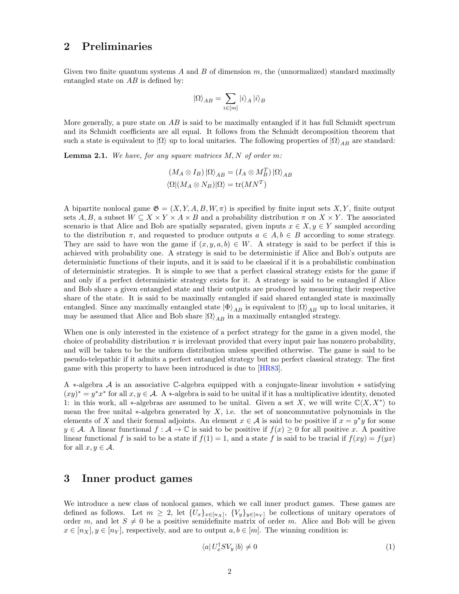
<figcaption class="paper-figure-caption"><b>Fig 1.</b> Low-resolution page preview, page 2</figcaption>
</figure>
<figure class="paper-figure-card">
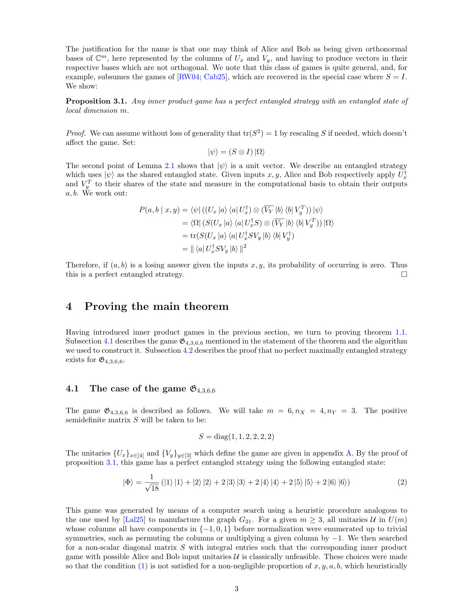
<figcaption class="paper-figure-caption"><b>Fig 2.</b> Low-resolution page preview, page 3</figcaption>
</figure>
<figure class="paper-figure-card">
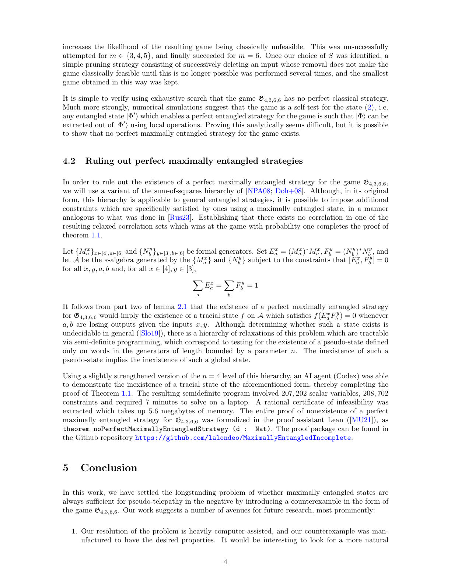
<figcaption class="paper-figure-caption"><b>Fig 3.</b> Low-resolution page preview, page 4</figcaption>
</figure>
<figure class="paper-figure-card">
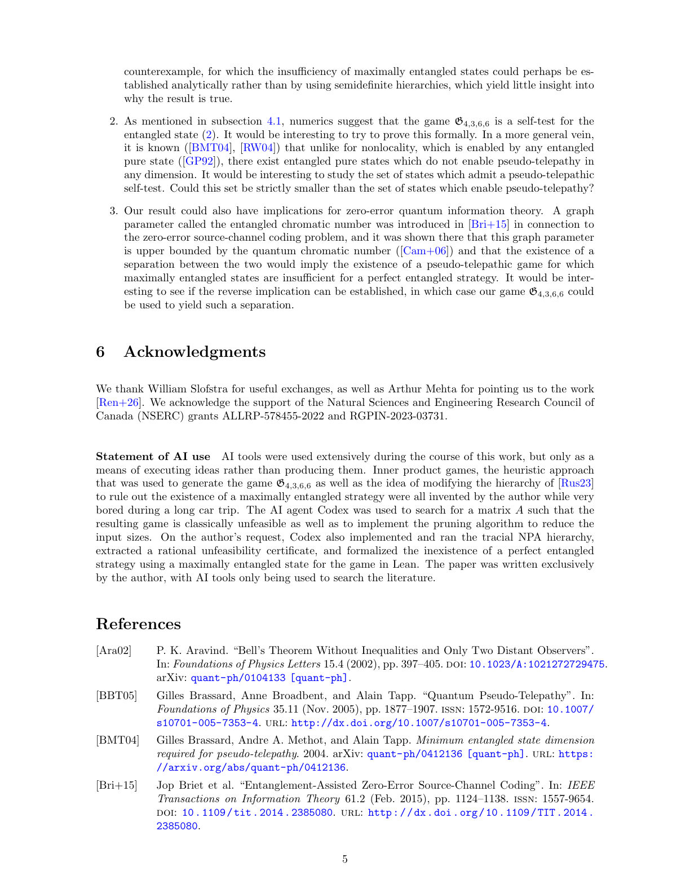
<figcaption class="paper-figure-caption"><b>Fig 4.</b> Low-resolution page preview, page 5</figcaption>
</figure>
<figure class="paper-figure-card">
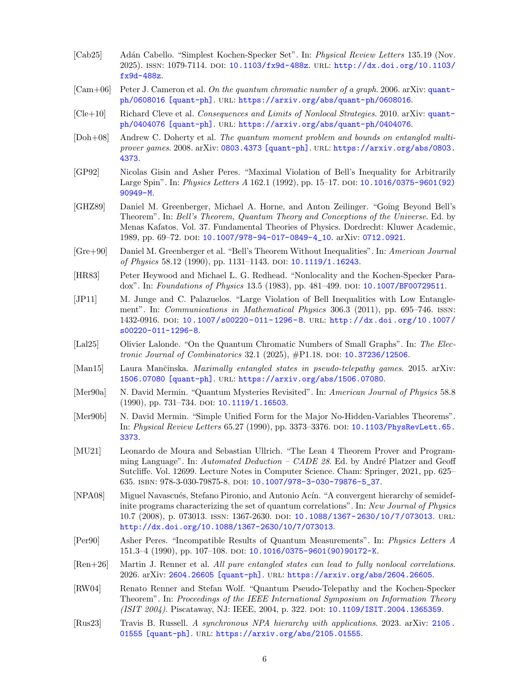
<figcaption class="paper-figure-caption"><b>Fig 5.</b> Low-resolution page preview, page 6</figcaption>
</figure>
</div>

<p><strong>Summary.</strong> This paper addresses an open problem in quantum nonlocality concerning whether maximally entangled states are sufficient for all pseudo-telepathic games. The authors construct a specific counterexample game, $G_{4,3,6,6}$, and rigorously prove that this game requires entanglement beyond what is provided by any maximally entangled state. This settles the long-standing question negatively.</p>
<p><strong>Why it may be interesting.</strong> This work pushes the boundaries of understanding quantum correlations by providing a concrete counterexample in nonlocal games, which has deep implications for characterizing genuine multipartite entanglement beyond simple state characterizations.</p>
<details>
<summary>Detailed structure</summary>
<p><strong>Main problem.</strong> The central question is whether maximally entangled quantum states are sufficient (complete) to guarantee a perfect strategy for every bipartite pseudo-telepathic nonlocal game.</p>
<p><strong>Main result.</strong> The authors provide a counterexample, $G_{4,3,6,6}$, demonstrating that maximal entanglement is not always sufficient for such games, settling the open question negatively.</p>
<p><strong>Method.</strong> The proof involves constructing an inner product game and using advanced mathematical techniques, including the NPA hierarchy relaxation solved via SDP, to show the non-existence of a perfect maximally entangled strategy.</p>
<p><strong>Model / system.</strong> The study uses bipartite nonlocal games, specifically a newly defined class called 'inner product games,' involving input/output sets of sizes 4, 3, and 6 respectively. The analysis is based on quantum correlation measures derived from unitary operators.</p>
<p><strong>Key observables.</strong> The existence or non-existence of a perfect strategy (probability one) using either an entangled state or a maximally entangled state for the game $G_{4,3,6,6}$.</p>
<p><strong>Important parameters / regimes.</strong> Input set sizes (4 and 3), output set size (6), and the specific unitaries defining the inner product games.</p>
<p><strong>Assumptions / limitations.</strong> The proof relies on solving a complex SDP derived from assuming the existence of such a state, which is computationally intensive and formalized in Lean.</p>
<p><strong>Paper structure.</strong> The paper introduces the problem context regarding completeness for pseudo-telepathy, constructs the specific counterexample game $G_{4,3,6,6}$ (an inner product game), and then proceeds through mathematical machinery (NPA hierarchy/SDP) to prove that no perfect maximally entangled strategy exists.</p>
</details>
<details>
<summary>Abstract</summary>
<p>One of the longstanding open problems in quantum nonlocality is to determine if maximally entangled states are complete for bipartite pseudo-telepathic games: namely, if every nonlocal game which admits a perfect entangled strategy admits such a strategy which uses a maximally entangled state. We exhibit a counterexample to this in the form of a bipartite nonlocal game with input sets of size 4 and 3 and output sets both of size 6. This game is part of a new class of nonlocal games, which we call inner product games, which could be of independent interest.</p>
</details>
<p><sub><a href="#top">↑ back to top</a></sub></p>

<p><a id="paper-2608.06097"></a></p>
<h3 id="an-effective-string-theory-toolbox-for-quantum-hall-interfaces-i-worldsheet-kinematics-and-constraint-structure"><a href="http://arxiv.org/abs/2608.06097v1">An Effective String Theory Toolbox for Quantum Hall Interfaces I: Worldsheet Kinematics and Constraint Structure</a></h3>
<p><strong>Authors:</strong> Ken K. W. Ma<br>
<strong>Type:</strong> theory · <strong>Category:</strong> strongly correlated electrons · <strong>PDF:</strong> <a href="https://arxiv.org/pdf/2608.06097v1">https://arxiv.org/pdf/2608.06097v1</a><br>
<strong>Analysis basis:</strong> full PDF text, analyzed in chunks
<strong>Topic relevance:</strong> <code>Keldysh / 2PI / non-Gaussian methods</code> <strong>2/5</strong> · <code>non-equilibrium dynamics</code> <strong>2/5</strong> · <code>analog quantum simulation</code> <strong>1/5</strong> · <code>correlated / nonlocal dissipation</code> <strong>1/5</strong> · <code>driven-dissipative phase transition</code> <strong>1/5</strong> · <code>methods for driven-dissipative</code> <strong>1/5</strong> · <code>non-equilibrium universality</code> <strong>1/5</strong></p>
<div class="figure-strip-hint">↔ Scroll figures horizontally</div>
<div class="paper-figures-scroll">
<figure class="paper-figure-card">
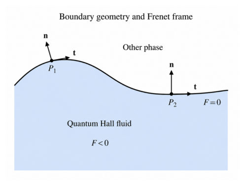
<figcaption class="paper-figure-caption"><b>Fig 1.</b> FIG. 1. Frenet frame and level-set description of a quantum Hall interface. The solid curve is the level set F = 0, the QH fluid occupies F &lt; 0, and n points from the QH phase toward the other phase.</figcaption>
</figure>
<figure class="paper-figure-card">
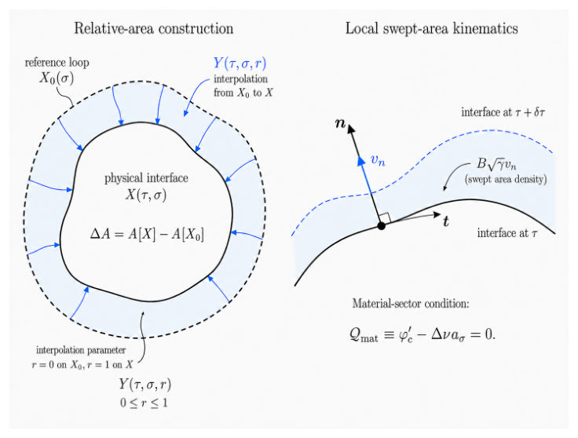
<figcaption class="paper-figure-caption"><b>Fig 2.</b> FIG. 2. Relative-area construction and local swept-area kinematics. Left: a fixed material reference loop X0(σ) is connected to the physical interface X(τ, σ) by a smooth interpolation Y (τ, σ, r), defining the relative magnetic-area density aσ. Right: normal motion sweeps magnetic area at the local rate B√γ vn, leading in the material sector to Qmat ≡φ′ c −∆ν aσ = 0. The local density depends on the chosen material pairing and interpolation, whereas its integral gives the signed relative magnetic area B[A[X] −A[X0]].</figcaption>
</figure>
<figure class="paper-figure-card">
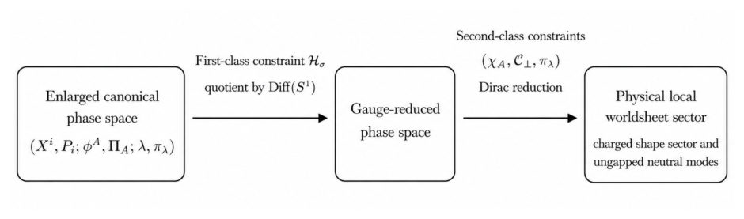
<figcaption class="paper-figure-caption"><b>Fig 3.</b> FIG. 3. Two-stage local canonical reduction. The first-class constraint Hσ generates spatial relabeling and is removed by quotienting by Diff+(S1). About a straight equilibrium interface with ∆ν ̸= 0, the nonzero modes of (χA, C⊥, πλ) form a second-class system and are eliminated through the Dirac bracket. After fixing the nonpropagating conserved profiles retained by the auxiliary completion, the resulting local worldsheet sector contains the charged shape sector together with any neutral modes not gapped by allowed interface interactions.</figcaption>
</figure>
</div>

<p><strong>Summary.</strong> This work develops an effective field theory toolbox for understanding dynamically moving quantum Hall interfaces. It rigorously links the interface's geometric motion to its electrical charge transport using a worldsheet formalism derived from Chern-Simons theory. The resulting framework cleanly separates universal topological kinematics from material-dependent physics.</p>
<p><strong>Why it may be interesting.</strong> While focused on QH physics, the development of a general worldsheet formalism for constrained boundary dynamics is highly relevant to modeling interfaces in other strongly correlated systems or topological materials where geometry dictates charge transport.</p>
<details>
<summary>Detailed structure</summary>
<p><strong>Main problem.</strong> The paper addresses the challenge of formulating an effective, geometrically consistent theory for quantum Hall (QH) interfaces where interface motion is coupled to charge dynamics.</p>
<p><strong>Main result.</strong> A systematic framework is derived that separates the universal Hall kinematics of the moving interface from its microscopic geometric and neutral energy contributions.</p>
<p><strong>Method.</strong> The authors employ a worldsheet description, starting from the two-sided Chern-Simons response and introducing a relative-area construction to derive an equal-time constraint linking charge transport to interface shape.</p>
<p><strong>Model / system.</strong> The system models Abelian quantum Hall interfaces separating incompressible phases. The analysis uses concepts from topological field theory (Chern-Simons action) applied to the geometry of the moving boundary.</p>
<p><strong>Key observables.</strong> Normal charge current ($\mathbf{J} \cdot \mathbf{n}$), interface velocity ($v_n$), relative magnetic-area density ($a_\sigma$), and geometric energy terms.</p>
<p><strong>Important parameters / regimes.</strong> Filling fraction difference ($\Delta
u = 
u_1 - 
u_2$) and the background magnetic field strength (implied by Chern-Simons coupling).</p>
<p><strong>Assumptions / limitations.</strong> The analysis is restricted to the electromagnetic Chern–Simons response in a flat sample, excluding terms like Wen–Zee or gravitational corrections.</p>
<p><strong>Figures summary.</strong> Figure 1 illustrates the Frenet frame and level-set description used for analyzing the QH interface geometry.</p>
<p><strong>Paper structure.</strong> The paper progresses by establishing the kinematic constraints from the Chern-Simons response, deriving an equal-time constraint via relative area construction, and finally separating the resulting dynamics into universal Hall kinematics and microscopic geometric terms.</p>
</details>
<details>
<summary>Abstract</summary>
<p>A freely moving quantum Hall interface is fundamentally different from an ordinary edge fixed by an external confining potential. Since a normal displacement changes the areas occupied by the adjacent incompressible phases, the interface geometry and charge dynamics cannot be treated as independent degrees of freedom. We formulate this problem for interfaces between Abelian quantum Hall phases using a spatially reparametrization-invariant worldsheet description, in which tangential motion is a relabeling of the interface while normal motion is physical. Starting from the two-sided Chern--Simons response, we derive the relation between normal charge transport and interface motion. We then introduce a relative-area construction, defined with respect to a material reference curve, that converts this velocity relation into an equal-time constraint linking the charged boundary sector to the interface shape. Combined with the folded $K$-matrix current algebra, this identifies the universal Hall kinematics of the moving interface while leaving its geometric energy and neutral dynamics dependent on microscopic interface physics. The resulting framework provides a systematic basis for effective theories of dynamical quantum Hall interfaces.</p>
</details>
<p><sub><a href="#top">↑ back to top</a></sub></p>

<p><a id="paper-2608.05748"></a></p>
<h3 id="finite-quantum-histories-holonomy-spectra-minimal-clocks-and-exact-clock-change-covariance"><a href="http://arxiv.org/abs/2608.05748v1">Finite Quantum Histories: Holonomy Spectra, Minimal Clocks, and Exact Clock-Change Covariance</a></h3>
<p><strong>Authors:</strong> Maxim V. Churilov<br>
<strong>Type:</strong> theory · <strong>Category:</strong> other · <strong>PDF:</strong> <a href="https://arxiv.org/pdf/2608.05748v1">https://arxiv.org/pdf/2608.05748v1</a><br>
<strong>Analysis basis:</strong> full PDF text, analyzed in chunks
<strong>Topic relevance:</strong> <code>non-equilibrium dynamics</code> <strong>2/5</strong> · <code>Keldysh / 2PI / non-Gaussian methods</code> <strong>1/5</strong> · <code>analog quantum simulation</code> <strong>1/5</strong> · <code>correlated / nonlocal dissipation</code> <strong>1/5</strong> · <code>driven-dissipative phase transition</code> <strong>1/5</strong> · <code>entanglement &amp; information structure</code> <strong>1/5</strong> · <code>methods for driven-dissipative</code> <strong>1/5</strong> · <code>non-equilibrium universality</code> <strong>1/5</strong></p>
<div class="figure-strip-hint">↔ Scroll figures horizontally</div>
<div class="paper-figures-scroll">
<figure class="paper-figure-card">
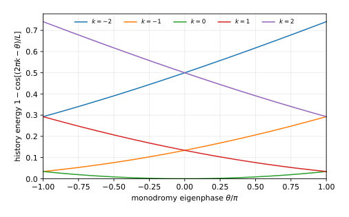
<figcaption class="paper-figure-caption"><b>Fig 1.</b> FIG. 1. Lowest spectral branches for a cyclic history of length L = 12. A monodromy eigenphase shifts the clock momentum. Zero energy occurs only at a fixed monodromy vector; a small nonzero eigenphase produces a precisely controlled frustration energy.</figcaption>
</figure>
</div>

<p><strong>Summary.</strong> This theoretical paper develops an exact formalism for analyzing finite-time quantum histories governed by cyclical unitary evolution. It shows that key physical observables like the spectral gap depend only on the global monodromy operator, not the individual steps. Furthermore, it rigorously classifies the symmetries (clock changes) that preserve the underlying information structure of the history.</p>
<p><strong>Why it may be interesting.</strong> This work provides a highly rigorous mathematical framework for understanding how global constraints (like cyclic boundary conditions or total evolution) dictate local observable properties in quantum systems, which is relevant to open system dynamics and measurement theory.</p>
<details>
<summary>Detailed structure</summary>
<p><strong>Main problem.</strong> The paper solves the problem of characterizing cyclic quantum histories defined by arbitrary time-dependent unitary steps, removing restrictive assumptions about the order of individual steps.</p>
<p><strong>Main result.</strong> It establishes that spectral properties (gap, trace) are determined solely by the monodromy operator's eigenphases, and it rigorously classifies exact symmetries (clock changes) preserving the history code structure.</p>
<p><strong>Method.</strong> The analysis employs spectral theory applied to a cyclic history Hamiltonian, relating observables like the spectrum and heat trace to the gauge-invariant properties of the total monodromy operator $M$.</p>
<p><strong>Model / system.</strong> The system models quantum evolution over a finite cycle time $L$, governed by a propagation Hamiltonian derived from sequential unitary steps $U_t$ acting on a finite-dimensional Hilbert space.</p>
<p><strong>Key observables.</strong> Monodromy operator ($M$), spectral gap ($\Delta(U)$), history code ($  ext{K}_0$), and the predictive quotient of event alphabets.</p>
<p><strong>Important parameters / regimes.</strong> Cycle length $L$, monodromy eigenphases $   heta_a$, estimation error bounds ($\epsilon, \delta$).</p>
<p><strong>Assumptions / limitations.</strong> The analysis assumes finite-dimensional unitary steps and focuses on 'sharp' (unitary) clock changes; it distinguishes these from general basis rotations.</p>
<p><strong>Figures summary.</strong> Figure 1 illustrates the lowest spectral branches for $L=12$, demonstrating how a nonzero monodromy phase shifts the clock momentum and controls the frustration energy relative to zero energy.</p>
<p><strong>Paper structure.</strong> The paper proceeds by first analyzing the Hamiltonian structure via the monodromy operator, then deriving closed forms for spectral quantities (gap, trace), followed by characterizing operational equivalence classes of clocks, and finally classifying the symmetries that preserve the history code.</p>
</details>
<details>
<summary>Abstract</summary>
<p>We solve cyclic finite-dimensional quantum histories for arbitrary time-dependent unitary steps, without assuming that one step has finite order. The propagation Hamiltonian is a unitary connection Laplacian on a cycle; its complete gauge invariant is the monodromy $M=U_{L-1}\cdots U_0$. Its spectrum is $λ_{a,k}=1-\cos((2πk-θ_a)/L)$, where $e^{iθ_a}\in\mathrm{spec}(M)$. Thus the exact history sector is isomorphic to $\mathrm{Fix}(M)$, while frustration, the gap above a nonempty zero-energy sector, the determinant, and the finite-temperature trace are obtained in closed form. Ordinary spectral data recover the multiset of monodromy phase cosines but not phase orientation; low energy certifies proximity to an exact relational history. We then define the predictive quotient of a sharp finite clock relative to an accessible operator system as the unique coarsest event alphabet preserving all conditional statistics on a history sector. A finite-error theorem shows that threshold clustering recovers this quotient when the minimum diamond separation of inequivalent event channels exceeds four times the estimation error, and proves an optimal record-count bound. With full matrix access and homogeneous step $U$, the minimal number of clock events is the projective order of $U$. We distinguish the normalizer of the clock algebra from transformations preserving the coherent history code and classify oriented exact sharp clock changes by $U(r)\times\mathbb{Z}_L$ on a rank-$r$ history sector; without orientation the cyclic factor becomes dihedral. Reversible changes of full-information clock fibers are necessarily unitary, so irreversible coarse-graining is not exact clock covariance. Minimal realizations of a complete history Gram kernel are uniquely unitarily equivalent, with a finite-data Procrustes bound. Independent finite-matrix code verifies the main results.</p>
</details>
<p><sub><a href="#top">↑ back to top</a></sub></p>

<p><a id="paper-2608.06326"></a></p>
<h3 id="multi-state-geometry-of-density-matrices-and-rectification-sum-rules"><a href="http://arxiv.org/abs/2608.06326v1">Multi-State Geometry of Density Matrices and Rectification Sum Rules</a></h3>
<p><strong>Authors:</strong> Barry Bradlyn<br>
<strong>Type:</strong> theory · <strong>Category:</strong> other · <strong>PDF:</strong> <a href="https://arxiv.org/pdf/2608.06326v1">https://arxiv.org/pdf/2608.06326v1</a><br>
<strong>Analysis basis:</strong> full PDF text, analyzed in chunks
<strong>Topic relevance:</strong> <code>non-equilibrium dynamics</code> <strong>2/5</strong> · <code>Keldysh / 2PI / non-Gaussian methods</code> <strong>1/5</strong> · <code>analog quantum simulation</code> <strong>1/5</strong> · <code>correlated / nonlocal dissipation</code> <strong>1/5</strong> · <code>driven-dissipative phase transition</code> <strong>1/5</strong> · <code>methods for driven-dissipative</code> <strong>1/5</strong> · <code>non-equilibrium universality</code> <strong>1/5</strong></p>
<div class="figure-strip-hint">↔ Scroll figures horizontally</div>
<div class="paper-figures-scroll">
<figure class="paper-figure-card">
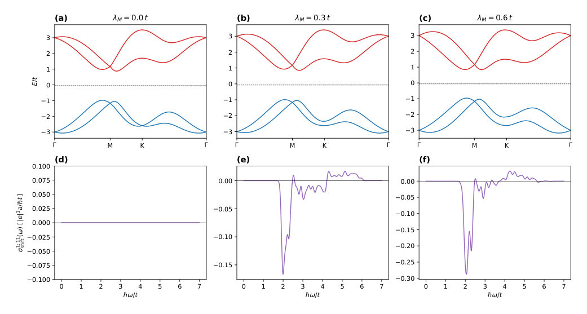
<figcaption class="paper-figure-caption"><b>Fig 1.</b> FIG. 2. Band structure [(a)–(c)] and shift conductivity σ1;11 shift(ω) [(d)–(f), in units of |e|3a/ℏt with a the lattice constant] of the generalized Kane-Mele model Eq. (130) at m = 0. Energy spectra are shown along the path Γ–M–K–Γ in the BZ, for mirror-breaking strengths λM = 0, 0.3t, 0.6t (λSO = 0.5t, λR = 0.3t, half filling). The two occupied (blue) and two unoccupied (red) bands remain gapped at half filling for all λM shown. The shift conductivity is symmetry-forbidden at λM = 0 as seen in (d), and increases in magnitude as λM increases [(e), (f)]. Here and in Fig. 3, tensor components are taken along the normalized reciprocal lattice directions per Eq. (132).</figcaption>
</figure>
<figure class="paper-figure-card">
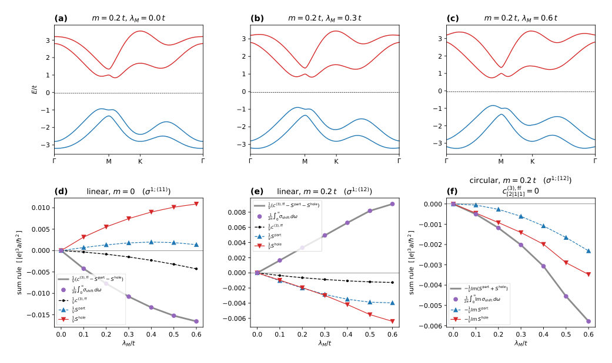
<figcaption class="paper-figure-caption"><b>Fig 2.</b> FIG. 3. The geometric sum rule Eq. (129) evaluated for the generalized Kane-Mele model as a function of mirror-breaking strength λM (all sum-rule curves in units of |e|3a/ℏ2, with a the lattice constant). (a)–(c) show the spectrum of the model in the presence of a time-reversal symmetry breaking Zeeman field (m = 0.2t). (d)–(f) show the corresponding frequency-integrated shift conductivity 1 2π R ∞ 0 dω σshift [points, evaluated by summing the line weights in Eq. (105)] together with the cumulant density 1 V c(3),ff and the multi-state geometric contributions 1 V Spart and 1 V Shole. The cumulant density was computed using Eq. (C28), while the components of the complex distortion tensor...</figcaption>
</figure>
</div>

<p><strong>Summary.</strong> This paper establishes a multi-state geometric framework using the cQAC tensor to analyze quantum state manifolds. It derives a general sum rule connecting the second-order DC rectification response of insulators to fundamental quantities like the ground state third cumulant and a complex distortion tensor. This provides a powerful, geometry-based tool for understanding nonlinear transport in interacting many-body systems.</p>
<p><strong>Why it may be interesting.</strong> It provides a powerful geometric tool (cQAC tensor) to constrain measurable transport properties (rectification/currents) in complex many-body systems, linking geometry directly to non-equilibrium response.</p>
<details>
<summary>Detailed structure</summary>
<p><strong>Main problem.</strong> To develop a theory of multi-state geometry for density matrices and use it to derive general sum rules for second-order rectification response in quantum materials.</p>
<p><strong>Main result.</strong> A zero-temperature sum rule is derived relating the frequency-integrated DC rectification response to the ground state third cumulant minus a complex distortion tensor, generalizing known single-particle results to many-body systems.</p>
<p><strong>Method.</strong> The authors introduce the cQAC tensor, a quantum generalization of the Amari-Chentsov tensor, and use time-dependent perturbation theory on thermal density matrices to establish geometric connections.</p>
<p><strong>Model / system.</strong> The work applies to general many-body systems, extending beyond clean, noninteracting zero-temperature limits. Specific applications include insulators modeled by a generalized Kane-Mele model.</p>
<p><strong>Key observables.</strong> Second-order DC rectification response, ground state third cumulant, complex distortion tensor, shift current, and nonlinear Hall currents.</p>
<p><strong>Important parameters / regimes.</strong> Zero temperature (T=0) is the primary focus for deriving exact sum rules; low-temperature measurements are discussed in relation to gap corrections.</p>
<p><strong>Assumptions / limitations.</strong> The theory aims to generalize beyond assumptions of clean, noninteracting systems, but derivations rely on perturbation theory and specific geometric formalisms like the QAC tensor.</p>
<p><strong>Figures summary.</strong> Not specified by notes; however, numerical verification is mentioned using a generalized Kane-Mele model.</p>
<p><strong>Paper structure.</strong> The paper develops the multi-state geometry framework via the cQAC tensor, derives the general zero-temperature sum rule for rectification response, specializes this rule to currents like the shift current, and finally discusses the temperature dependence of the result.</p>
</details>
<details>
<summary>Abstract</summary>
<p>The geometry of quantum states has emerged as a key ingredient in understanding the linear and nonlinear responses of quantum materials. To date, however, the connection between geometry and nonlinear response is best understood for clean, noninteracting systems at zero temperature. In this work, we develop a theory of multi-state geometry for density matrices and use it to derive sum rules for second-order rectification, making no assumptions about the strength of disorder or interactions. We first show that perturbation theory for thermal density matrices gives rise to two dual information-theoretic connections and an almost complex structure. We introduce a complex, quantum generalization of the Amari-Chentsov tensor of classical information theory, the cQAC tensor, which captures the multi-state geometry of the perturbed density matrix. We derive a zero-temperature sum rule for the frequency-integrated DC rectification response of an insulator as a difference between a ground state third cumulant and the complex distortion tensor, a multi-state geometric quantity built from the cQAC tensor. This generalizes known single-particle sum rules for the shift and nonlinear Hall currents to many-body systems and general perturbations. Specializing to the shift current, we resolve the geometric contribution for multiband insulators into particle-like and hole-like terms. We verify the sum rule numerically in a generalized Kane-Mele model, finding that the geometric contribution can dominate the integrated response. Finally, we show that although the splitting of the sum rule into cumulant and geometric contributions does not survive at nonzero temperature, the measured sum rule for insulators differs from its zero-temperature form by corrections exponentially small in the gap, allowing low-temperature rectification measurements to probe the multi-state geometry of insulators.</p>
</details>
<p><sub><a href="#top">↑ back to top</a></sub></p>

<p><a id="paper-2608.05992"></a></p>
<h3 id="towards-fault-tolerance-with-universal-phase-error-transparent-gates-for-high-spin-cat-codes"><a href="http://arxiv.org/abs/2608.05992v1">Towards fault-tolerance with universal phase-error-transparent gates for high-spin cat codes</a></h3>
<p><strong>Authors:</strong> Kelvin Onggadinata, Si Yan Koh, Arghya Maity, Kuan Eng Johnson Goh, Bent Weber, Kay Jin Lim, Hui Khoon Ng, Teck Seng Koh<br>
<strong>Type:</strong> theory · <strong>Category:</strong> quantum information and computing · <strong>PDF:</strong> <a href="https://arxiv.org/pdf/2608.05992v1">https://arxiv.org/pdf/2608.05992v1</a><br>
<strong>Analysis basis:</strong> full PDF text, analyzed in chunks
<strong>Topic relevance:</strong> <code>QC/QI experiment</code> <strong>2/5</strong> · <code>quantum measurements</code> <strong>2/5</strong> · <code>exotic spin models in light-matter</code> <strong>1/5</strong> · <code>measurement-induced transitions</code> <strong>1/5</strong> · <code>spintronics-quantum-optics interface</code> <strong>1/5</strong></p>
<div class="figure-strip-hint">↔ Scroll figures horizontally</div>
<div class="paper-figures-scroll">
<figure class="paper-figure-card">
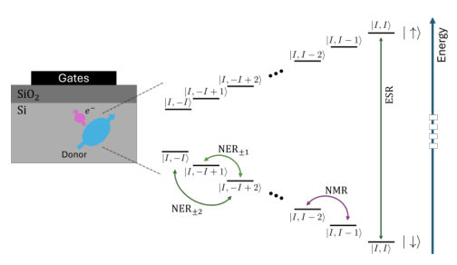
<figcaption class="paper-figure-caption"><b>Fig 1.</b> FIG. 1: Diagram of the donor and electron system in sil- icon and their energy levels. The eigenstates |s⟩⊗|I, mI⟩ are split into two branches with electron spin s =↓(s =↑) corresponding to the lower (upper) branch. Electron spin resonance (ESR) controls inter-branch transitions, while transitions between nuclear spin levels within each branch can be controlled with resonant magnetic fields (NMR). The quadrupole interaction enables transitions via electric fields on resonance with nuclear spacings of ∆mI = ±1 and ∆mI = ±2 (NER±1, NER±2).</figcaption>
</figure>
<figure class="paper-figure-card">
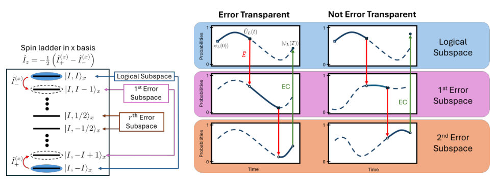
<figcaption class="paper-figure-caption"><b>Fig 2.</b> FIG. 2: (a) Dephasing errors act as spin ladder operations in the {|I, mI⟩x} basis, with each |mI| forming the support state for the logical subspace and error subspaces. (b) Conceptual illustration of error-transparent (ET) and non-ET operations. The red arrow illustrates the action of an error operator causing jumps from error subspaces of lower rank to higher ones. ET operations preserve the intended trajectories/evolutions in the logical subspace in each of the error subspaces. Performing error correction (represented by green arrow) at any time then brings the transformed state in the error subspaces to the appropriate state in the logical subspace.</figcaption>
</figure>
<figure class="paper-figure-card">
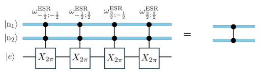
<figcaption class="paper-figure-caption"><b>Fig 3.</b> FIG. 3: Error-transparent implementation of logical CZ gate for I = 3/2. A sequence of four consecutive ESR- based 2π rotations applied on the electron ancilla pro- duces a geometric phase conditional on the support states of the |1L⟩state, resulting in an ET CZ gate. Each thick blue line corresponds to a high-spin donor (d-level sys- tem) with state labels |nk⟩, k = 1, 2, while the thin black line corresponds to the electron system with state label |e⟩. The ESR frequencies are denoted by ωESR mI,m′ I with mI, m′ I being the conditional spin states on n1, n2, re- spectively.</figcaption>
</figure>
<figure class="paper-figure-card">
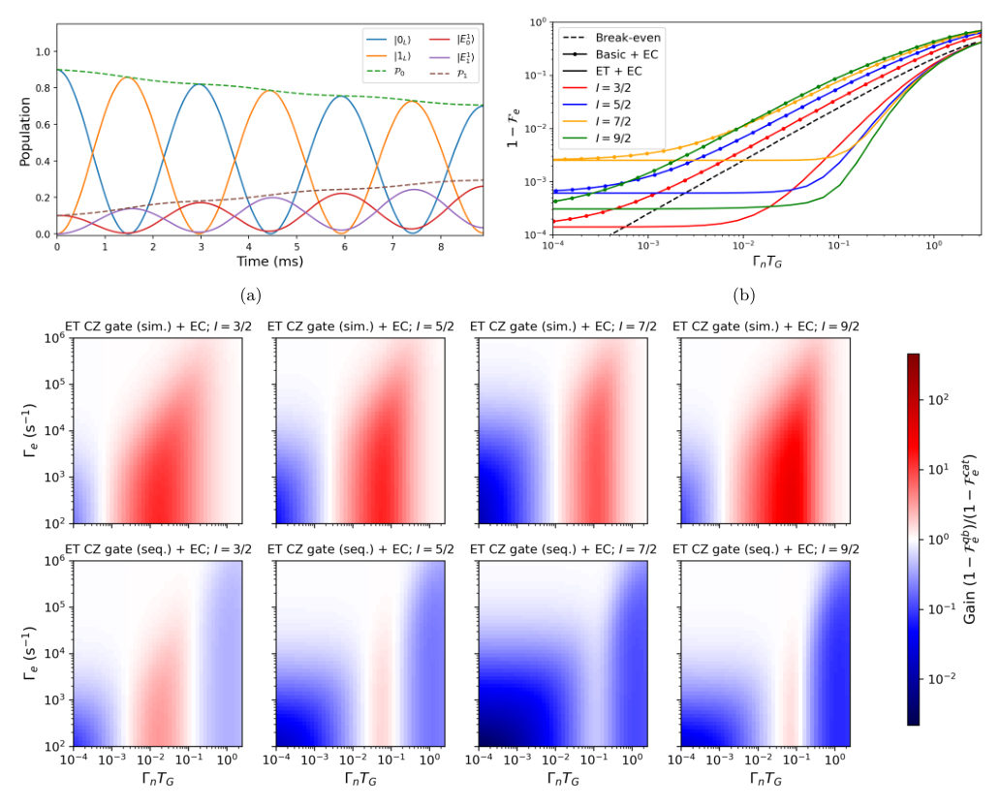
<figcaption class="paper-figure-caption"><b>Fig 4.</b> FIG. 4: Evolution and numerical performances of ET gates. (a) State evolution under an ET X gate rotation with initial state |ψ0⟩= √</figcaption>
</figure>
<figure class="paper-figure-card">
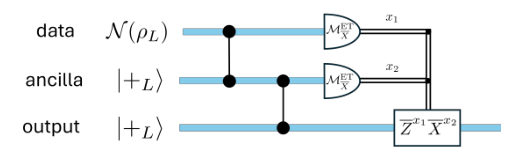
<figcaption class="paper-figure-caption"><b>Fig 5.</b> FIG. 5: Knill error correction (Knill-EC) circuit based on teleportation. All the rails of the circuit are assumed to be the same high-spin system (denoted with blue thick lines) that is encoded in spin cat-x code. The data rail contains a noisy logical state represented by the error channel N acting on ρL, while the ancilla and output rail are initialized in the logical dual state |+L⟩. The re- maining circuit components consists of ET version of CZ gates, logical dual basis measurements, and appropriate Pauli gates depending on the measurement outcomes.</figcaption>
</figure>
</div>

<p><strong>Summary.</strong> This paper develops the theory required to achieve fault-tolerant quantum computing using high-dimensional nuclear spins encoded in a spin cat code. The core contribution is the construction of universal logical gates that are 'Error-Transparent' (ET) to phase errors, ensuring that operational noise remains correctable by subsequent Quantum Error Correction steps. This provides a concrete path toward scalable quantum computation in solid-state systems.</p>
<p><strong>Why it may be interesting.</strong> This work provides a highly detailed theoretical roadmap for realizing fault-tolerant quantum computation in solid-state spin qubits, directly addressing the critical issue of noise resilience in physical implementations.</p>
<details>
<summary>Detailed structure</summary>
<p><strong>Main problem.</strong> The primary challenge is constructing quantum gates for high-dimensional nuclear spin systems that are fault-tolerant against phase errors, which dominate noise in donor-in-silicon architectures.</p>
<p><strong>Main result.</strong> The authors construct a universal set of Error-Transparent (ET) logical gates and demonstrate that ET operations are crucial for achieving optimal error correction capacity necessary for full fault-tolerant quantum computation.</p>
<p><strong>Method.</strong> The work involves theoretical construction of gate sets, formalizing the Error Transparency criterion ($\left[\hat{\mathcal{E}}_j, \hat{H}(t)
ight]|\psi_L
angle= 0$), and analyzing the fault tolerance of measurement and error correction gadgets.</p>
<p><strong>Model / system.</strong> The system utilizes high-dimensional nuclear spins (e.g., in donor atoms in silicon) encoded into a spin cat code, which provides intrinsic robustness against phase errors. Control is achieved via ESR and NMR/NER driving fields.</p>
<p><strong>Key observables.</strong> Error propagation paths, fault counts ($t(I), t(A), t(O)$), logical gate fidelity relative to ET vs non-ET gates, and measurement POVM operators (CAN, DUAL).</p>
<p><strong>Important parameters / regimes.</strong> The code distance $p = 2r + 1$ and the error order $r$, which dictates the maximum correctable error weight.</p>
<p><strong>Assumptions / limitations.</strong> Errors are primarily modeled as dephasing errors ($\hat{I}_z$), and the analysis relies on constructing gates that satisfy the ET criterion for fault tolerance across all components (gates, measurement, correction).</p>
<p><strong>Figures summary.</strong> Figures illustrate energy level diagrams showing ESR/NMR control; one figure contrasts ET vs non-ET operations; another details the implementation of a logical CZ gate using multiple conditioned pulses.</p>
<p><strong>Paper structure.</strong> The paper develops from establishing the physical platform and error model, to constructing the universal set of ET gates (including $Z(	heta)$ and $CZ$), and finally proving fault tolerance for measurement and error correction circuits based on these ET operations.</p>
</details>
<details>
<summary>Abstract</summary>
<p>High-dimensional nuclear spins offer a hardware-efficient route to quantum error correction (QEC), with the spin cat code providing intrinsic robustness against phase errors -- the dominant noise channel in donor-in-silicon architectures. However, realizing the full potential of this encoding requires gate operations that preserve its error-correcting properties. In this work, we construct a universal logical gate set that is error-transparent (ET) to phase errors, and discuss its practical implementations and challenges. The ET gates ensure that phase errors occurring stochastically during gate operations are propagated in a systematically traceable manner and remain correctable in a subsequent QEC step. Among the universal gate set constructed, we identify the logical $X$ gate as the primary challenge and discuss potential realization schemes. In addition, to fully leverage the spin cat code's advantage over an unencoded qubit, multi-tone microwave driving of the logical $CZ$ gate is essential. Our simulations show that ET gates significantly outperform non-ET gates and may be necessary to surpass the break-even point. We further show how logical measurement and recovery can be constructed from ET operations, and explain why state-preparation cannot be made ET. In particular, ET measurement in the computational basis is realizable via spin parity measurement, and that error correction circuits constructed from ET operations achieve optimal error correction capacity. Our work charts a concrete path toward full fault-tolerant quantum computation with high-dimensional nuclear spin systems.</p>
</details>
<p><sub><a href="#top">↑ back to top</a></sub></p>

<p><a id="paper-2608.06203"></a></p>
<h3 id="beyond-electrons-radiative-thermal-computing-and-neural-networks-at-the-near-field-limit"><a href="http://arxiv.org/abs/2608.06203v1">Beyond Electrons: Radiative Thermal Computing and Neural Networks at the Near-Field Limit</a></h3>
<p><strong>Authors:</strong> Hexiang Zhang, Mauro Antezza, Yi Zheng<br>
<strong>Type:</strong> theory · <strong>Category:</strong> disordered systems and neural networks · <strong>PDF:</strong> <a href="https://arxiv.org/pdf/2608.06203v1">https://arxiv.org/pdf/2608.06203v1</a><br>
<strong>Analysis basis:</strong> full PDF text, analyzed in chunks
<strong>Topic relevance:</strong> <code>non-equilibrium dynamics</code> <strong>2/5</strong> · <code>correlated / nonlocal dissipation</code> <strong>1/5</strong> · <code>driven-dissipative phase transition</code> <strong>1/5</strong> · <code>methods for driven-dissipative</code> <strong>1/5</strong> · <code>non-equilibrium universality</code> <strong>1/5</strong></p>
<div class="figure-strip-hint">↔ Scroll figures horizontally</div>
<div class="paper-figures-scroll">
<figure class="paper-figure-card">
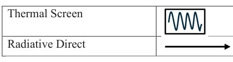
<figcaption class="paper-figure-caption"><b>Fig 1.</b> Fig. 2: Scheme of 4-model combined T-CNN.</figcaption>
</figure>
</div>

<p><strong>Summary.</strong> This paper proposes using near-field radiative heat exchange to build functional neural networks without any electrical circuits. By employing phase-change materials in diodes and transistors, they create a Thermal CNN (T-CNN) for pattern recognition and a T-RNN for memory. This establishes a new, energy-conserving computing paradigm where temperature gradients act as the carriers of information.</p>
<p><strong>Why it may be interesting.</strong> This work provides a novel platform where thermal dynamics, phase transitions, and non-equilibrium heat transfer govern information processing, offering insights into energy-efficient computation far removed from traditional electronic models.</p>
<details>
<summary>Detailed structure</summary>
<p><strong>Main problem.</strong> The primary goal is to develop a non-electronic, contactless computing paradigm for artificial neural networks by replacing electrical charge carriers with heat transfer.</p>
<p><strong>Main result.</strong> The authors successfully establish the first radiative realization of thermal deep learning, demonstrating that temperature fields can carry intelligence to perform complex computations.</p>
<p><strong>Method.</strong> They model the network using near-field radiative coupling between components like diodes and transistors made from phase-change materials (PCMs).</p>
<p><strong>Model / system.</strong> The system is a programmable Near-Field Radiative Thermal Network (NRTNN) comprising T-CNN for spatial processing and T-RNN for temporal memory. It relies on near-field photon tunneling between nanoscale surfaces, utilizing the temperature-dependent emissivity of PCMs like VO2 and GST.</p>
<p><strong>Key observables.</strong> Heat flux ($\mathbf{h}$), radiative coupling coefficients (synaptic weights), and logic states $\{+1, 0, -1\}$ (Absorbing, Neutral, Releasing).</p>
<p><strong>Important parameters / regimes.</strong> Gate temperature distributions ($T_G$), PCM relaxation time ($    au_s$), and the amplification factor ($\alpha$).</p>
<p><strong>Assumptions / limitations.</strong> The computation is modeled entirely through near-field radiative heat exchange, assuming that thermal behavior can be accurately mapped onto a neural network structure.</p>
<p><strong>Figures summary.</strong> Figure 1 illustrates the basic units: radiative thermal diodes (rectification) and transistors (gating). Later figures detail the T-CNN/T-RNN structures incorporating temporal recurrence via hysteretic emissivity.</p>
<p><strong>Paper structure.</strong> The paper systematically builds from fundamental components (diodes, transistors) to complex architectures. It first details the spatial processing (T-CNN), then extends this to include time dependence and memory (T-RNN), culminating in a detailed derivation of the total loss function $\mathcal{J}$ for training.</p>
</details>
<details>
<summary>Abstract</summary>
<p>We propose and analyze a programmable near-field radiative thermal network that emulates convolutional and recurrent operations through heat exchange. By integrating radiative thermal diodes and transistors composed of phase-change materials such as VO2 and GST, we construct two fundamental architectures: the Thermal Convolutional Neural Network (T-CNN) and the Thermal Recurrent Neural Network (T-RNN). The T-CNN executes spatial pattern recognition via temperature-dependent emissivity modulation, where each gate acts as a tunable radiative filter that amplifies or suppresses localized heat flux. The system is externally programmable via gate temperature distributions in VO2/GST, enabling weighted summation and nonlinear activation; hysteretic transitions provide state dependent responses that can be harnessed for memory. The T-RNN extends this functionality temporally, embedding radiative feedback and hysteretic phase transitions to realize memory and sequential inference. Together, these systems exhibit tri-state logic behavior, radiative gain, and non-volatile thermal storage, key attributes of physical learning. Each logical node operates without charge carriers or electrical circuits, relying solely on near-field photon tunneling between nanoscale surfaces. The resulting framework enables direct implementation of convolution, memory retention, and feedback learning within a contactless, energy-conserving platform. This study establishes the first radiative realization of thermal deep learning, revealing a new computing paradigm where temperature fields function as carriers of intelligence, uniting heat transfer, memory, and adaptive inference in a single non-electronic system.</p>
</details>
<p><sub><a href="#top">↑ back to top</a></sub></p>

<p><a id="paper-2608.05512"></a></p>
<h3 id="large-anomalous-shifts-of-potassium-39-feshbach-resonances"><a href="http://arxiv.org/abs/2608.05512v1">Large anomalous shifts of potassium-39 Feshbach resonances</a></h3>
<p><strong>Authors:</strong> Ali Zaheer, Mohammed Bouras, Krzysztof Giergiel, Rudolf Grimm, Andrei Sidorov, Peter Hannaford<br>
<strong>Type:</strong> experiment · <strong>Category:</strong> other · <strong>PDF:</strong> <a href="https://arxiv.org/pdf/2608.05512v1">https://arxiv.org/pdf/2608.05512v1</a><br>
<strong>Analysis basis:</strong> full PDF text, analyzed in chunks
<strong>Topic relevance:</strong> <code>analog quantum simulation</code> <strong>2/5</strong> · <code>Keldysh / 2PI / non-Gaussian methods</code> <strong>1/5</strong> · <code>driven-dissipative phase transition</code> <strong>1/5</strong> · <code>methods for driven-dissipative</code> <strong>1/5</strong> · <code>quantum optics experiment</code> <strong>1/5</strong></p>
<div class="figure-strip-hint">↔ Scroll figures horizontally</div>
<div class="paper-figures-scroll">
<figure class="paper-figure-card">
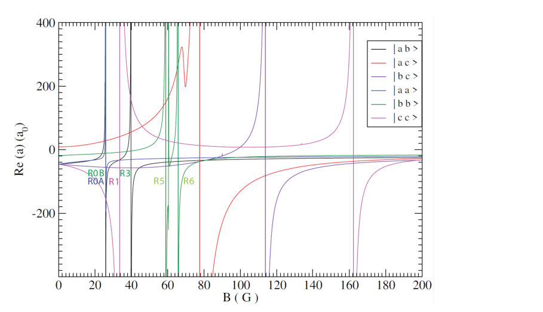
<figcaption class="paper-figure-caption"><b>Fig 1.</b> FIG. 1. Calculated 39K F=1 s-wave and d-wave Feshbach resonances up to 200 G [42] . The spin channels {aa}, etc, are defined in the caption to Table I. The resonances studied in this work are labeled R0A, R0B, R1, R3, R5, and R6 (Table I).</figcaption>
</figure>
<figure class="paper-figure-card">
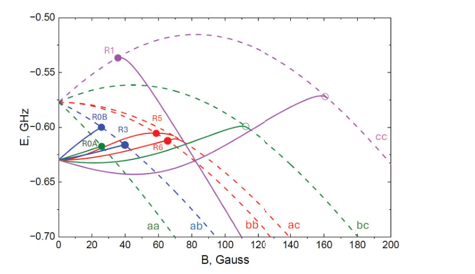
<figcaption class="paper-figure-caption"><b>Fig 2.</b> FIG. 2. Calculated partial molecular and atom-pair Zeeman energy-level diagram leading to F=1 s-wave Feshbach resonances at 25.9 G (R0A and R0B), 33.6 G (R1), 39.9 G (R3), 58.8 G (R5), 65.6 G (R6), 77.8 G, 113.9 G and 162.3 G [42], where the energy of atom-pair states (dashed lines) equals the energy of bound molecular states (solid lines) and the magnetic quantum numbers mF 1 + mF 2 = M. The molecular Zeeman states are (S, I, f, M) = (1, 3, 3, +2) [dark green], (1, 1, 1, +1) [blue], (1, 3, 3, +1) [blue], (1, 1, 1, 0) [red], (1, 3, 3, 0) [red], (1, 3, 3, -1) [light green], (1, 1, 2, -2) [purple, 33.6 G resonance], (1, 1, 2, -2) [purple, 162.3 G resonance]. The (1, 3, 3, M) and (1, 1, 1, M)...</figcaption>
</figure>
<figure class="paper-figure-card">
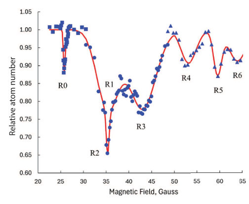
<figcaption class="paper-figure-caption"><b>Fig 3.</b> FIG. 3. Scan of the Feshbach atom-loss resonances up to 65 G for a 39K unpolarized-spin sample at a temperature of 16 µK and ODT trap depth of 46 µK. The blue squares, circles and triangles represent data taken on different days. The solid line represents a multi-Gaussian fit. The labels are defined in Table I.</figcaption>
</figure>
<figure class="paper-figure-card">
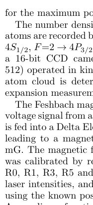
<figcaption class="paper-figure-caption"><b>Fig 4.</b> Figure 3 shows an example scan of the Feshbach atom- loss resonances up to 65 G for an unpolarized-spin sample at a temperature of 16 µK and trap depth of 46 µK. The narrow resonance labeled R0 is the well-known 25.9 G resonance listed in Table I. The dip labeled R1 and R2, near 35 G, is a superposition of two resonances (Fig. 4): a broad resonance (1/e half-width ≈3.8 G), which we designate R1, and a narrow resonance (≈0.5 G), which we designate R2. The broader resonance R1 shifts to lower magnetic fields with decreasing ODT laser power, approaching 33.4 G as the power approaches zero, and the amplitude increases from 16% at 10 W ODT laser power up to 36% at 1 W. This resonance is identified...</figcaption>
</figure>
<figure class="paper-figure-card">
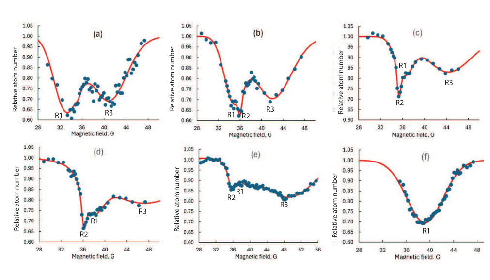
<figcaption class="paper-figure-caption"><b>Fig 5.</b> FIG. 4. (a)-(e) Scans of the R1, R2 and R3 Feshbach atom-loss resonances for an unpolarized-spin sample and a range of ODT powers and atom cloud temperatures: (a) 1.1 W, 6 µK; (b) 2.3 W, 10 µK; (c) 7.1 W, 20 µK; (d) 9.8 W, 25 µK; (e) 12 W, 30 µK. (f) Scan of the R1 resonance on a spin-polarized |1, −1⟩sample, 15 W, 34 µK. Solid lines represent multi-Gaussian fits to the recorded profiles of the resonances.</figcaption>
</figure>
</div>

<p><strong>Summary.</strong> The researchers observed unusually large anomalous shifts in specific Feshbach resonances of potassium-39 atoms trapped by an optical dipole trap. They determined these shifts arise from a substantial differential ac Stark shift, pointing to molecular polarizabilities four to seven times larger than expected. This finding highlights the sensitivity of resonance spectroscopy to near-resonant laser coupling with underlying molecular transitions.</p>
<p><strong>Why it may be interesting.</strong> This work provides a highly sensitive probe into the dynamic polarizabilities of weakly bound molecules, revealing strong coupling mechanisms that deviate significantly from simple predictions based on atomic polarizabilities. This is crucial for high-precision quantum control using optical traps.</p>
<details>
<summary>Detailed structure</summary>
<p><strong>Main problem.</strong> The study reports observing large anomalous shifts of specific Feshbach resonances in potassium-39 atoms confined within an optical dipole trap.</p>
<p><strong>Main result.</strong> These large shifts are attributed to unexpectedly large dynamic polarizabilities of the weakly bound Feshbach molecules, which are significantly larger than previously expected for such systems.</p>
<p><strong>Method.</strong> The shift is measured by tracking the resonance position as a function of the optical trap depth and temperature, relating this shift to differential ac Stark effects.</p>
<p><strong>Model / system.</strong> The system involves ultracold potassium-39 atoms interacting via Feshbach resonances in an optical dipole trap (ODT). Theoretical models use coupled-channel scattering approaches involving singlet and triplet molecular potentials.</p>
<p><strong>Key observables.</strong> Anomalous resonance shifts (up to +7.5 G), the dependence of these shifts on ODT depth, and the extracted dynamic polarizabilities ($\alpha_{mol}$).</p>
<p><strong>Important parameters / regimes.</strong> Potassium-39 ($^{39}	ext{K}$), Feshbach resonances at 33.6 G and 39.9 G, trapping laser wavelength (1063.9 nm), temperatures up to $\sim 35 \mu	ext{K}$.</p>
<p><strong>Assumptions / limitations.</strong> The analysis assumes a spherically symmetric 3D-Gaussian trapping potential and uses thermal averaging over the trap depth.</p>
<p><strong>Figures summary.</strong> Figures show calculated resonance positions, Zeeman energy level curves for molecular states, and plots detailing how the measured shift depends on the ODT trap depth and temperature.</p>
<p><strong>Paper structure.</strong> The paper first reports the observation of large shifts, then analyzes the dependence on trapping parameters to isolate the source (differential ac Stark shift), and finally attributes this effect to a near-coincidence between the laser frequency and a molecular transition.</p>
</details>
<details>
<summary>Abstract</summary>
<p>We report the observation of large anomalous shifts, up to +7.5 G, of the positions of the 33.6 G and 39.9 G Feshbach resonances in potassium-39 atoms confined in a 1063.9 nm optical dipole trap (ODT) at temperatures up to around 35 μK and trap depths up to about 136 μK. When the atom cloud is cooled to lower temperatures, by reducing the trap depth of the ODT, the shifts decrease proportionally with trap depth and approach zero at zero depth. We show that the large observed shifts originate from a large differential ac Stark shift between the incoming pair of potassium-39 atoms and the weakly bound Feshbach molecule, which in turn originates from an unexpectedly large dynamic polarizability of the Feshbach molecule. The polarizabilities of the Feshbach molecules extracted from the measured shifts of the 33.6 G and 39.9 G resonances are about four to seven times the sum of the polarizabilities of the two incoming potassium-39 atoms, that is, about four to seven times larger than the usual polarizability of weakly bound Feshbach molecules. The large polarizabilities of the Feshbach molecules are attributed to a near-coincidence between the frequency of the 1063.9 nm ODT laser and the frequency of a molecular transition from the last vibrational level of the lowest triplet a3Σ+u potential to a vibrational level of the excited b3Σ+g potential. Other potassium-39 Feshbach resonances we have studied exhibit a zero or very small shift, corresponding to molecular polarizabilities close to the sum of the polarizabilities of the two incoming potassium-39 atoms.</p>
</details>
<p><sub><a href="#top">↑ back to top</a></sub></p>

<p><a id="paper-2608.05294"></a></p>
<h3 id="self-dual-math588math-gauge-theory-in-21d-lattice-model-and-topological-phase-transitions"><a href="http://arxiv.org/abs/2608.05294v1">Self-dual $S_3$ gauge theory in 2+1d: lattice model and topological phase transitions</a></h3>
<p><strong>Authors:</strong> Da-Chuan Lu, Chong Wang, Ashvin Vishwanath<br>
<strong>Type:</strong> theory · <strong>Category:</strong> statistical mechanics · <strong>PDF:</strong> <a href="https://arxiv.org/pdf/2608.05294v1">https://arxiv.org/pdf/2608.05294v1</a><br>
<strong>Analysis basis:</strong> full PDF text, analyzed in chunks
<strong>Topic relevance:</strong> <code>analog quantum simulation</code> <strong>2/5</strong> · <code>Keldysh / 2PI / non-Gaussian methods</code> <strong>1/5</strong> · <code>driven-dissipative phase transition</code> <strong>1/5</strong> · <code>entanglement &amp; information structure</code> <strong>1/5</strong> · <code>methods for driven-dissipative</code> <strong>1/5</strong></p>
<div class="figure-strip-hint">↔ Scroll figures horizontally</div>
<div class="paper-figures-scroll">
<figure class="paper-figure-card">
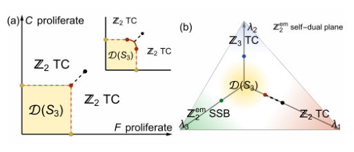
<figcaption class="paper-figure-caption"><b>Fig 1.</b> FIG. 1. Phase diagrams of D(S3). (a) Schematic (C, F) plane for independent proliferation of the non-Abelian chargeon C and fluxon F, analogous to the e-m proliferation diagram of the Z2 toric code. The D(S3) phase near the origin is bordered by two Z2 TC phases connected by Higgs-confinement conti- nuity. Yellow dots denote 3d 3-state Potts∗transitions, while the red dot is the Zem 2 -symmetric multicritical point studied here. Along the self-dual line, a possible first-order line with Zem 2 SSB terminates at a 3d Ising point. The inset shows an alternative scenario where the Zem 2 -odd perturbation is irrel- evant, broadening the multicritical point into a critical line bounded by the red...</figcaption>
</figure>
<figure class="paper-figure-card">
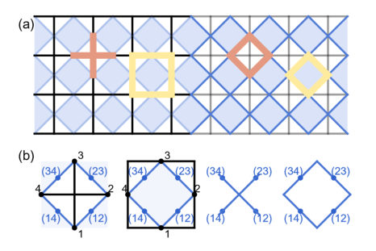
<figcaption class="paper-figure-caption"><b>Fig 2.</b> FIG. 2. (a) Lattice structure. Qutrits reside on the black links, and qubits on the blue links, primitive cell of blue lat- tice has half the area. Left: the quantum-double convention, with star (red) and plaquette (yellow) operators. Right: the equivalent Wen-plaquette convention, with unfilled and filled diamond plaquettes. (b) Stabilizer definitions. From left to right: qutrit plaquette Bp and star Av, whose Pauli powers on links 1–4 depend on the qubit states (ij) on the adjacent blue links; qubit plaquette Bp and star Av, each acting on the four qubit links of the blue lattice.</figcaption>
</figure>
</div>

<p><strong>Summary.</strong> This paper constructs and analyzes a lattice model for the $S_3$ quantum double gauge theory, generalizing known self-dual $\mathbb{Z}_2$ systems. By employing three independent theoretical methods, the authors map out the phase diagram, predicting critical edge states described by the Ising CFT and identifying multiple distinct gapped phases in the bulk.</p>
<p><strong>Why it may be interesting.</strong> This work provides a rigorous theoretical framework for understanding how topological order breaks down in non-Abelian gauge theories, connecting lattice models directly to continuum CFT descriptions.</p>
<details>
<summary>Detailed structure</summary>
<p><strong>Main problem.</strong> The research aims to generalize the concept of electric-magnetic self-duality from $\mathbb{Z}_2$ gauge theories to non-Abelian systems, specifically analyzing phase transitions in $S_3$ quantum double models.</p>
<p><strong>Main result.</strong> The model exhibits a gapless critical edge state described by the tetracritical Ising CFT, and the bulk undergoes three independent gapped phase transitions driven by bosonic perturbations.</p>
<p><strong>Method.</strong> The authors employ multiple complementary theoretical approaches: category-theoretic anyon condensation, microscopic lattice Hamiltonians analysis, and Chern-Simons-Higgs (CSH) theory to characterize the phase diagram.</p>
<p><strong>Model / system.</strong> The system is a lattice model for the $S_3$ quantum double $\mathcal{D}(S_3)$ on a tensor product Hilbert space. It generalizes the self-dual $\mathbb{Z}_2$ gauge theory and is constructed to be sign-problem-free.</p>
<p><strong>Key observables.</strong> The existence of gapless critical edge states, the nature of the three distinct gapped phases in the bulk, and the realization of the $\mathbb{Z}_2$ anyon-permutation symmetry.</p>
<p><strong>Important parameters / regimes.</strong> Coupling constants ($\lambda_1, \lambda_2, \lambda_3$) governing bosonic perturbations; lattice size for numerical checks.</p>
<p><strong>Assumptions / limitations.</strong> The proposal introduces a 'minimal-condensation principle,' assuming that proliferating a bosonic anyon generically drives condensation of a minimal condensable algebra.</p>
<p><strong>Figures summary.</strong> Figure 1 schematically shows the phase diagram for $D(S_3)$ and its dependence on three perturbation parameters $(\lambda_1, \lambda_2, \lambda_3)$. Table I details critical boundaries and neighboring gapped phases.</p>
<p><strong>Paper structure.</strong> The paper develops a unified picture by analyzing transitions using three independent methods (anyon condensation, lattice Hamiltonians, CSH theory). It establishes the minimal-condensation principle and extends the model to infinite families of dihedral quantum doubles $\mathcal{D}(D_{2n})$.</p>
</details>
<details>
<summary>Abstract</summary>
<p>Electric-magnetic self-duality of the $\mathbb{Z}_2$ gauge theory, realized microscopically as a half-lattice-translation exchanging electric charge and magnetic flux, has been an influential example of a duality symmetry with an exact lattice realization. We construct the first non-Abelian generalization of this construction: a lattice model of the $S_3$ quantum double $\mathcal{D}(S_3)$ on a tensor product Hilbert space in which the $\mathbb{Z}^{\mathrm{em}}_2$ anyon-permutation symmetry, exchanging the non-Abelian chargeon $C$ and fluxon $F$, is realized via lattice translation. Consequently we find that the zigzag boundary termination of the model realizes, without fine-tuning, a gapless critical edge state described by the tetracritical Ising CFT. The bulk admits three independent $\mathbb{Z}_2^{\mathrm{em}}$-preserving bosonic perturbations, driving $\mathcal{D}(S_3)$ into distinct gapped phases. We analyze these transitions by three independent methods: category-theoretic anyon condensation, microscopic lattice Hamiltonians, and Chern-Simons-Higgs theory, which all agree, yielding a unified picture. These examples motivate a minimal-condensation principle: proliferating a bosonic anyon generically drives condensation of a minimal condensable algebra containing it, with symmetry-related condensates appearing as degenerate vacua that spontaneously break the anyon-permutation symmetry. Our model construction extends to an infinite family of self-dual dihedral quantum doubles $\mathcal{D}(D_{2n})$. Notably, each model is sign-problem-free, opening the door to large-scale numerical exploration of the phases of non-Abelian Chern-Simons-Higgs theories.</p>
</details>
<p><sub><a href="#top">↑ back to top</a></sub></p>

<p><a id="paper-2608.06048"></a></p>
<h3 id="thermodynamic-statistics-of-given-names-in-usa-and-france"><a href="http://arxiv.org/abs/2608.06048v1">Thermodynamic statistics of given names in USA and France</a></h3>
<p><strong>Authors:</strong> Klaus M. Frahm, Dima L. Shepelyansky<br>
<strong>Type:</strong> theory · <strong>Category:</strong> statistical mechanics · <strong>PDF:</strong> <a href="https://arxiv.org/pdf/2608.06048v1">https://arxiv.org/pdf/2608.06048v1</a><br>
<strong>Analysis basis:</strong> full PDF text, analyzed in chunks
<strong>Topic relevance:</strong> <code>non-equilibrium dynamics</code> <strong>2/5</strong> · <code>non-equilibrium universality</code> <strong>2/5</strong> · <code>Keldysh / 2PI / non-Gaussian methods</code> <strong>1/5</strong> · <code>driven-dissipative phase transition</code> <strong>1/5</strong></p>
<div class="figure-strip-hint">↔ Scroll figures horizontally</div>
<div class="paper-figures-scroll">
<figure class="paper-figure-card">
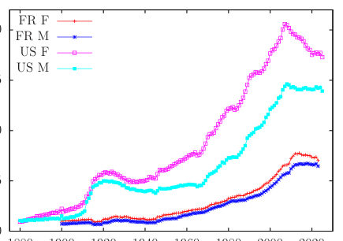
<figcaption class="paper-figure-caption"><b>Fig 1.</b> FIG. 1: Year dependence of the number of given names in the data sets of [3, 4] for the four cases of FR and US, both for female (F) and male (M) names. See also Appendix Fig. A1, where normalized values of this number with respect to the year 1960 are shown.</figcaption>
</figure>
<figure class="paper-figure-card">
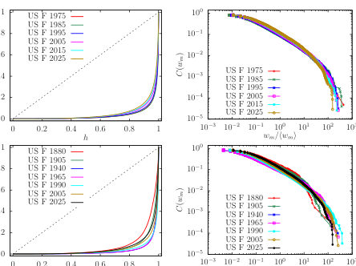
<figcaption class="paper-figure-caption"><b>Fig 2.</b> FIG. 2: Left: US female name Lorenz curves for the 6 years 1975, 1985, 1995, 2005, 2015, 2025 (top) and the 7 years 1880, 1905, 1940, 1965, 1990, 2005, 2025 (bot- tom). The x-axis corresponds to the cumulated fraction of households/names (h) and the y-axis to the cumulated fraction of wealth/name frequency (w). The dashed black line corresponds to the line of perfect equipartition w = h. The Gini coefficients for the years 1975 to 2025 (1880 to 2025) are G = 0.93, 0.934, 0.925, 0.911, 0.903, 0.894 (G = 0.854, 0.895, 0.938, 0.939, 0.931, 0.911, 0.894). Right: Pareto curves C(wm) for the same data where C(wm) represents the fraction of names with a name frequency larger than wm (analogous to...</figcaption>
</figure>
<figure class="paper-figure-card">
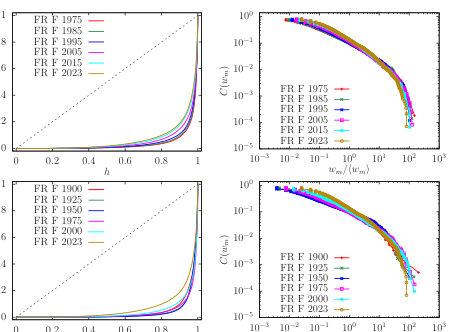
<figcaption class="paper-figure-caption"><b>Fig 3.</b> FIG. 3: FR female name Lorenz and Pareto curves for the 6 years 1975, 1985, 1995, 2005, 2015, 2023 (top) and the 6 years 1990, 1925, 1950, 1975, 2000, 2023 (bottom) in the same style as Fig. 2. The Gini coefficients for the years 1975 to 2023 (1900 to 2023) are G = 0.931, 0.925, 0.916, 0.898, 0.877, 0.866 (G = 0.923, 0.934, 0.934, 0.931, 0.914, 0.866) and the values of ⟨wm⟩= ws are ⟨wm⟩= 130, 103, 80.5, 56.9, 43.8, 39.1 (⟨wm⟩= 237, 221, 265, 130, 71.6, 39.1). See also Appendix Fig. A3 for the case of FR male names.</figcaption>
</figure>
<figure class="paper-figure-card">
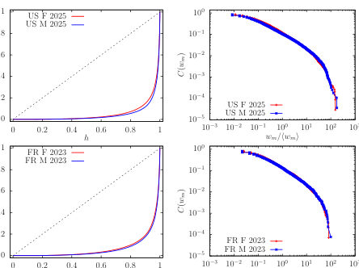
<figcaption class="paper-figure-caption"><b>Fig 4.</b> FIG. 4: Comparison of Lorenz curves (left panels) and Pareto curves (right panels) between female names (red curves) and male names (blue curves). Top (bottom) panels correspond to data of US 2025 (FR 2023). See also Appendix Fig. A4 for the cases of US 1880 and FR 1990.</figcaption>
</figure>
<figure class="paper-figure-card">
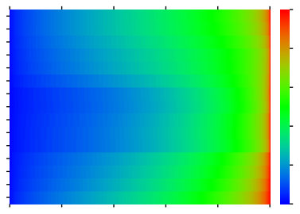
<figcaption class="paper-figure-caption"><b>Fig 5.</b> FIG. 6: Density color plot of Lorenz curves for US F for the years 1880 to 2020 (in steps of 10 years) obtained from the RJE model with optimal values of a and ε. The x-axis cor- responds to the cumulated fraction of households/names (h) and the y-axis to year. For a better visibility of small wealth values the numbers of the colorbar correspond to the quantity w1/4 where w is the cumulated fraction of wealth/name fre- quency. For all cases, the average curve distance between the real data and optimal RJE Lorenz curves is below 5 × 10−3. This applies also to Appendix Fig. A8, where a similar den- sity plot for FR F and the years 1900 to 2020 is shown.</figcaption>
</figure>
</div>

<p><strong>Summary.</strong> This paper treats the popularity distribution of given names in the USA and France as a physical system analogous to wealth inequality. By applying tools from statistical mechanics—specifically Rayleigh-Jeans thermalization theory—the authors demonstrate that name frequencies exhibit remarkable long-term stability. This suggests that naming preferences follow universal, quantifiable thermodynamic laws.</p>
<p><strong>Why it may be interesting.</strong> Although applied to sociology, the reliance on established concepts like RJ condensation and entropy conservation provides a novel, non-standard application of statistical physics principles to complex empirical time series.</p>
<details>
<summary>Detailed structure</summary>
<p><strong>Main problem.</strong> The study analyzes the long-term statistical distributions of given names in the USA and France, treating name popularity as an analogue to wealth distribution.</p>
<p><strong>Main result.</strong> The name frequency distributions exhibit remarkable stability over more than a century, suggesting they are governed by universal physical principles like Rayleigh-Jeans (RJ) thermalization and condensation.</p>
<p><strong>Method.</strong> The authors apply concepts from statistical mechanics used in analyzing wealth inequality, such as the Lorenz curve, Gini coefficient, and Pareto distribution, to historical name data.</p>
<p><strong>Model / system.</strong> The system is an analogy: given name frequency ($f_m$) is mapped onto wealth ($w_m$), and the underlying dynamics are modeled using concepts derived from energy conservation in physical systems (RJ thermalization).</p>
<p><strong>Key observables.</strong> Lorenz curves, Gini coefficient (stable range of 0.85-0.95), Pareto distribution parameters, and Pearson correlator coefficients ($
ho$).</p>
<p><strong>Important parameters / regimes.</strong> Time scale exceeding 100 years; the RJ model parameters ($T, \mu$ or $a, \epsilon$).</p>
<p><strong>Assumptions / limitations.</strong> The core assumption is that name frequency distributions can be accurately modeled using thermodynamic analogies derived from wealth inequality analysis.</p>
<p><strong>Figures summary.</strong> Figures show Lorenz and Pareto curves for US/FR names across various years, demonstrating high Gini coefficients and stability. Correlator plots (Fig. 9) track year-to-year correlations.</p>
<p><strong>Paper structure.</strong> The paper establishes the analogy between name frequency and wealth distribution, applies statistical tools (Lorenz/Gini), models the dynamics using RJ thermalization theory, and validates this model by fitting parameters to historical data from both countries.</p>
</details>
<details>
<summary>Abstract</summary>
<p>Using official government data sets of USA and France we analyze the occurrence/frequency/popularity distributions of given names on a time scale of more than 100 years. These distributions are characterized through the Lorenz and Pareto curves broadly used in the analysis of wealth inequality in the world. These curves remain stable during the considered time period with the Gini coefficient remaining in the narrow range 0.85-0.95. As for the case of wealth inequality, we show that the distributions of names are well described by the Rayleigh-Jeans (RJ) thermalization and condensation phenomenon well studied in various physical systems. The RJ thermalization results from two integrals of motion being analogous to energy and probability norm conservation in physical systems with energy states corresponding to popularity levels of names. Time correlations between names are also determined showing their stability until the middle of the twentieth century and a significant change after that.</p>
</details>
<p><sub><a href="#top">↑ back to top</a></sub></p>

<p><a id="paper-2608.06094"></a></p>
<h3 id="time-dependent-hamiltonian-simulation-with-optimal-query-complexity"><a href="http://arxiv.org/abs/2608.06094v1">Time-Dependent Hamiltonian Simulation with Optimal Query Complexity</a></h3>
<p><strong>Authors:</strong> Boyang Chen, Minbo Gao, Xinzhao Wang, Shuo Zhou<br>
<strong>Type:</strong> theory · <strong>Category:</strong> quantum information and computing · <strong>PDF:</strong> <a href="https://arxiv.org/pdf/2608.06094v1">https://arxiv.org/pdf/2608.06094v1</a><br>
<strong>Analysis basis:</strong> full PDF text, analyzed in chunks
<strong>Topic relevance:</strong> <code>analog quantum simulation</code> <strong>2/5</strong> · <code>entanglement &amp; information structure</code> <strong>1/5</strong> · <code>methods for driven-dissipative</code> <strong>1/5</strong> · <code>non-equilibrium dynamics</code> <strong>1/5</strong></p>
<div class="figure-strip-hint">↔ Scroll figures horizontally</div>
<div class="paper-figures-scroll">
<figure class="paper-figure-card">
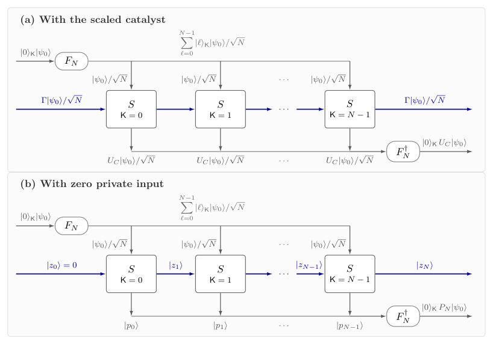
<figcaption class="paper-figure-caption"><b>Fig 1.</b> Figure 1: State flow for finite reuse. In panel (a), the same scaled catalyst is reused and the public outputs recombine into UC|ψ0⟩. Panel (b) starts at |z0⟩= 0; |zℓ⟩and |pℓ⟩are the private input and public output of call ℓ. After F † N, the K = 0 public component is PN|ψ0⟩. Gray and blue lines denote public and private components, respectively.</figcaption>
</figure>
</div>

<p><strong>Summary.</strong> This paper presents a query-optimal algorithm for simulating general time-dependent quantum Hamiltonians using the HAM-T model. By utilizing advanced transducer techniques and error analysis involving weighted circuit combinations, they achieve a complexity that matches theoretical lower bounds. This is significant because it proves that modeling time dependence does not incur an asymptotic overhead in terms of required queries.</p>
<p><strong>Why it may be interesting.</strong> This work provides state-of-the-art results on quantum simulation complexity, directly impacting how efficiently we can model time evolution in complex physical systems using limited query access models.</p>
<details>
<summary>Detailed structure</summary>
<p><strong>Main problem.</strong> Determining the optimal query complexity for simulating a general time-dependent Hamiltonian $H(t)$ over a finite time interval $[0, T]$.</p>
<p><strong>Main result.</strong> The authors achieve an algorithm with query complexity matching the known lower bound, demonstrating that general time dependence does not introduce asymptotic overhead compared to time-independent cases.</p>
<p><strong>Method.</strong> They employ a novel one-query transducer framework combined with a weighted combination of reuse circuits to ensure factorial decay in simulation error.</p>
<p><strong>Model / system.</strong> The system is governed by quantum dynamics dictated by $H(t)$, and the target operation is the time-ordered propagator $U_H(T)$. The analysis is conducted within the time-indexed block-encoding-access model (HAM-T).</p>
<p><strong>Key observables.</strong> Query complexity, simulation error ($\epsilon$), and the evolution time scale ($\alpha T$).</p>
<p><strong>Important parameters / regimes.</strong> Lipschitz constant ($eta$) of $H(t)$, total time $T$, and desired precision $\epsilon$.</p>
<p><strong>Assumptions / limitations.</strong> The Hamiltonian $H(t)$ is assumed to be Lipschitz continuous, and the analysis operates in the worst-case black-box query complexity setting.</p>
<p><strong>Figures summary.</strong> Figure 1 illustrates state flow for finite reuse, showing recombination with a scaled catalyst ($\Gamma|\psi_0
angle/\sqrt{N}$) versus zero private input, demonstrating error control.</p>
<p><strong>Paper structure.</strong> The work progresses by first establishing the optimal query complexity using a transducer framework, then refining the error analysis through weighted combinations of reuse circuits to achieve factorial precision decay. Later sections explore continuous-time analogues and subspace constructions for theoretical completeness.</p>
</details>
<details>
<summary>Abstract</summary>
<p>We give a query-optimal algorithm for simulating a general $n$-qubit time-dependent Hamiltonian $H(t)$ on $[0,T]$, assuming that $H$ is Lipschitz continuous and $\|H(t)\|\leqα$. In the standard $\mathrm{HAM\mbox{-}T}$ access model, the algorithm approximates the time-ordered propagator $U_H(T)$ to error $\varepsilon$ using $$ O\left(   αT+\frac{\log(1/\varepsilon)}   {\log(e+\log(1/\varepsilon)/(αT))}   \right) $$ $\mathrm{HAM\mbox{-}T}$ queries. This matches the known query lower bound for time-independent Hamiltonians, showing that time dependence incurs no asymptotic query overhead.   Our method first constructs a one-query transducer that, given an auxiliary state, implements an approximation to $U_H(T)$ and returns the state unchanged. A weighted combination of circuits that apply the transducer different numbers of times makes the error caused by omitting this state decay factorially, yielding the stated optimal precision dependence. For time-independent Hamiltonians, the same method also gives a query-optimal alternative to qubitization.</p>
</details>
<p><sub><a href="#top">↑ back to top</a></sub></p>

<p><a id="paper-2608.06145"></a></p>
<h3 id="quantum-amplitude-estimation-for-travel-time-estimation-in-stochastic-vehicle-routing-problems"><a href="http://arxiv.org/abs/2608.06145v1">Quantum Amplitude Estimation for Travel Time Estimation in Stochastic Vehicle Routing Problems</a></h3>
<p><strong>Authors:</strong> Xingyue Wang, Monika Filipovska<br>
<strong>Type:</strong> both · <strong>Category:</strong> quantum information and computing · <strong>PDF:</strong> <a href="https://arxiv.org/pdf/2608.06145v1">https://arxiv.org/pdf/2608.06145v1</a><br>
<strong>Analysis basis:</strong> full PDF text, analyzed in chunks
<strong>Topic relevance:</strong> <code>QC/QI experiment</code> <strong>2/5</strong> · <code>methods for driven-dissipative</code> <strong>1/5</strong> · <code>non-equilibrium dynamics</code> <strong>1/5</strong></p>
<div class="figure-strip-hint">↔ Scroll figures horizontally</div>
<div class="paper-figures-scroll">
<figure class="paper-figure-card">
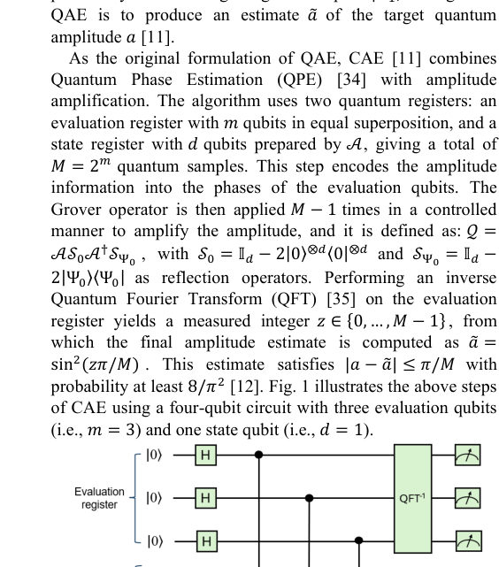
<figcaption class="paper-figure-caption"><b>Fig 1.</b> Fig. 1. A four-qubit toy CAE circuit with a three-qubit evaluation register and a one-qubit state register.</figcaption>
</figure>
<figure class="paper-figure-card">
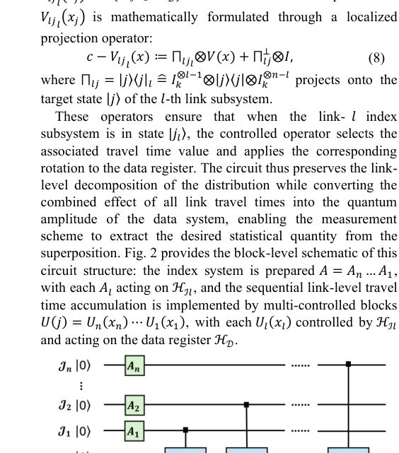
<figcaption class="paper-figure-caption"><b>Fig 2.</b> Fig. 2. Circuit design for QAE-based path expected travel time estimation.</figcaption>
</figure>
<figure class="paper-figure-card">
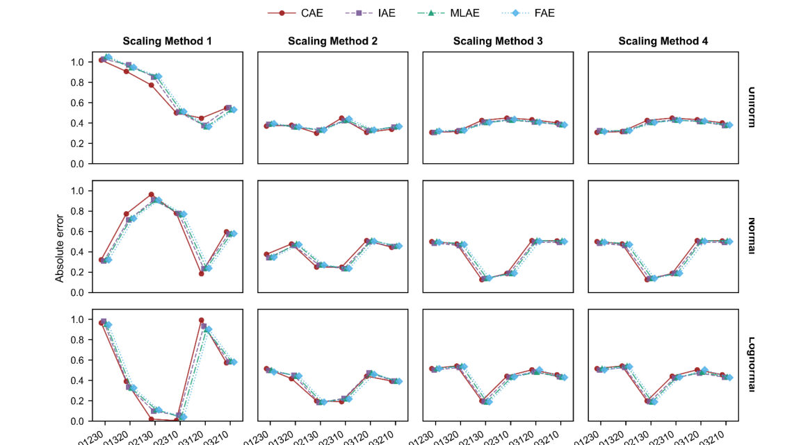
<figcaption class="paper-figure-caption"><b>Fig 3.</b> Fig. 3. Absolute errors of the four QAE methods at rotation-angle range [0, 𝜋] under three travel time distributions.</figcaption>
</figure>
<figure class="paper-figure-card">
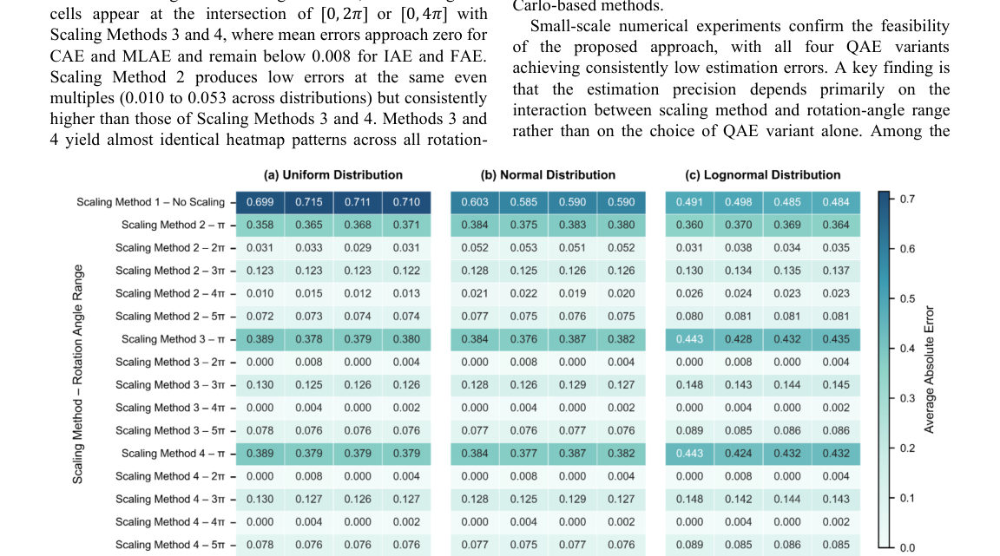
<figcaption class="paper-figure-caption"><b>Fig 4.</b> Fig. 4. Heatmaps of mean absolute error under uniform, normal, and lognormal travel time distributions.</figcaption>
</figure>
</div>

<p><strong>Summary.</strong> This paper applies Quantum Amplitude Estimation (QAE) to estimate expected travel times in stochastic vehicle routing problems, offering a theoretical quadratic speed-up over classical Monte Carlo methods. By encoding the entire probability space into a quantum superposition, it provides a powerful tool for hybrid quantum-classical optimization frameworks in intelligent transportation systems.</p>
<p><strong>Why it may be interesting.</strong> While focused on optimization/transportation, the core technique—using quantum amplitude estimation for expectation value calculation—is a direct application of advanced quantum algorithms relevant to simulating complex physical systems or calculating expectation values in open quantum systems.</p>
<details>
<summary>Detailed structure</summary>
<p><strong>Main problem.</strong> The core challenge is accurately estimating expected path travel times within Stochastic Vehicle Routing Problems (VRP) in complex transportation networks.</p>
<p><strong>Main result.</strong> Quantum Amplitude Estimation (QAE) provides a theoretical quadratic speed-up over classical Monte Carlo simulation for this estimation task, with the Iterative AE variant showing stable performance.</p>
<p><strong>Method.</strong> The study proposes using QAE to encode all feasible travel time realizations into a quantum superposition state, avoiding sampling and prior distribution assumptions.</p>
<p><strong>Model / system.</strong> The problem is modeled on Stochastic Transportation Networks (STNs) represented as directed graphs with discrete random link travel times. The implementation uses IBM's Qiskit framework.</p>
<p><strong>Key observables.</strong> Estimation accuracy, Mean Absolute Error (MAE), and the performance comparison across four QAE variants (CAE, IAE, MLAE, FAE).</p>
<p><strong>Important parameters / regimes.</strong> The choice of rotation-angle range ($   ext{[0, 2\pi]}$ vs $    ext{[0, \pi]}$) and scaling method significantly impacts estimation accuracy.</p>
<p><strong>Assumptions / limitations.</strong> The work focuses only on the expectation-estimation subproblem; it does not solve the global combinatorial VRP. The results are currently limited by NISQ device noise.</p>
<p><strong>Figures summary.</strong> Figures illustrate circuit structures (e.g., 4-qubit toy CAE circuit) and heatmaps showing mean absolute error across various scaling ranges and rotation-angle ranges for different distributions.</p>
<p><strong>Paper structure.</strong> The paper first establishes the computational bottleneck of classical VRP solving in STNs, then details the QAE methodology to estimate expected travel times, compares four specific QAE variants, and finally analyzes parameter sensitivity (scaling/rotation angle) using experimental results on a small-scale network.</p>
</details>
<details>
<summary>Abstract</summary>
<p>Solving the Vehicle Routing Problem (VRP) in Stochastic Transportation Networks (STNs), a core task in Intelligent Transportation Systems (ITS), introduces estimation challenges for stochastic path travel times and the resulting VRP objective function. These challenges have typically been addressed through computationally expensive sampling-based techniques such as Monte Carlo simulation, whose performance depends on sample size, the sampling strategy, and the underlying travel time distributions. To address these issues, this study proposes and validates a quantum computing technique, Quantum Amplitude Estimation (QAE) for path-level travel time estimation in STNs. Without relying on sampling or prior assumptions of the travel time distribution, the proposed framework encodes all feasible travel time realizations into a quantum superposition, enabling a theoretical quadratic speed-up over Monte Carlo simulation. Four QAE variants are implemented in IBM's Qiskit framework, namely Canonical AE (CAE), Iterative AE (IAE), Maximum Likelihood AE (MLAE), and Faster AE (FAE), together with four rotation-angle scaling strategies for handling different discrete travel time distributions. Experiments on a small-scale STN show that the choice of scaling method and rotation-angle range significantly affects estimation accuracy, while the four QAE variants produce comparable estimates across all tested conditions, with IAE exhibiting the most stable overall performance. The results provide practical guidance on parameter selection for future hybrid quantum-classical optimization frameworks in ITS applications.</p>
</details>
<p><sub><a href="#top">↑ back to top</a></sub></p>

<p><a id="paper-2608.05754"></a></p>
<h3 id="quantum-one-way-functions-and-related-cryptographic-primitives"><a href="http://arxiv.org/abs/2608.05754v1">Quantum One-Way Functions and Related Cryptographic Primitives</a></h3>
<p><strong>Authors:</strong> Georgios M. Nikolopoulos<br>
<strong>Type:</strong> theory · <strong>Category:</strong> quantum information and computing · <strong>PDF:</strong> <a href="https://arxiv.org/pdf/2608.05754v1">https://arxiv.org/pdf/2608.05754v1</a><br>
<strong>Analysis basis:</strong> full PDF text, analyzed in chunks
<strong>Topic relevance:</strong> <code>entanglement &amp; information structure</code> <strong>2/5</strong> · <code>quantum measurements</code> <strong>2/5</strong></p>
<div class="figure-strip-hint">↔ Scroll figures horizontally</div>
<div class="paper-figures-scroll">
<figure class="paper-figure-card">
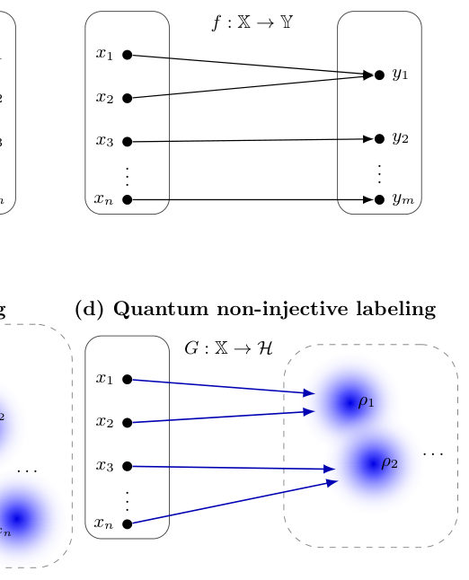
<figcaption class="paper-figure-caption"><b>Fig 1.</b> Figure 1. Schematic comparison of injective and non-injective mappings in the classical and quantum settings. In the quantum case, the shaded regions represent states with finite operational overlap; distinct labels may therefore correspond to distinct, but nonorthogonal states.</figcaption>
</figure>
</div>

<p><strong>Summary.</strong> This paper provides a detailed review of quantum cryptographic primitives beyond simple key distribution, aiming to establish quantum analogues for classical one-way functions. It compares different theoretical constructs—such as QOWFs and pseudorandom states—by analyzing their security under various computational and information-theoretic models. The work is crucial for advancing the field toward practical, physically secure quantum cryptography.</p>
<p><strong>Why it may be interesting.</strong> While highly theoretical, the discussion of state distinguishability (as seen in Chunk 3's analysis of phase averaging) touches upon fundamental concepts of quantum measurement and state preparation that are central to understanding noise resilience in any physical implementation.</p>
<details>
<summary>Detailed structure</summary>
<p><strong>Main problem.</strong> The paper reviews quantum cryptographic primitives beyond Quantum Key Distribution, focusing on finding quantum analogues to classical one-way functions.</p>
<p><strong>Main result.</strong> It compares various primitives like QOWFs, OWSGs, and PRSGs, clarifying their conceptual relationships while emphasizing the need for physical realizability in security proofs.</p>
<p><strong>Method.</strong> The approach is a comprehensive review comparing computational vs. information-theoretic notions of quantum one-wayness using established principles from quantum information theory.</p>
<p><strong>Model / system.</strong> The discussion centers on abstract quantum states and their manipulation (e.g., encoding classical bits into quantum states) rather than a specific physical Hamiltonian or experimental setup.</p>
<p><strong>Key observables.</strong> Security assumptions, physical realizability, robustness to noise, and the distinguishability between different ensembles of quantum states.</p>
<p><strong>Important parameters / regimes.</strong> The dimension of the Hilbert space ($d$), error probability in measurements, and the amount of extractable classical information ($ ext{I}_{    ext{acc}}$).</p>
<p><strong>Assumptions / limitations.</strong> It distinguishes its focus on primitives relying fundamentally on quantum state properties from post-quantum cryptography based on classical hardness assumptions.</p>
<p><strong>Figures summary.</strong> The notes mention that relationships between various cryptographic primitives are summarized in Table 1, though the table content is not provided.</p>
<p><strong>Paper structure.</strong> The paper reviews QOWFs and related primitives (OWSGs, PRSGs) by comparing them to classical OWFs, discussing both computational and information-theoretic security models, and concluding with open problems.</p>
</details>
<details>
<summary>Abstract</summary>
<p>Quantum cryptographic primitives beyond key distribution remain a less well understood area of research. In classical cryptography, one-way functions underpin nearly all standard cryptographic protocols, motivating the search for meaningful quantum analogues and for a clear understanding of the physical and computational mechanisms that could enforce one-wayness. In this article, we review quantum one-way functions and a range of closely related quantum-state primitives, including one-way state generators, pseudorandom quantum states, and efficiently indistinguishable pairs of states. We discuss both computational and information-theoretic notions of quantum one-wayness, emphasizing the different adversarial models and security assumptions that underlie these constructions. We compare and contrast the various proposed primitives, and clarify their conceptual relationships. Particular emphasis is placed on questions of physical realizability, experimental feasibility, and robustness to noise. Finally, we outline open problems and future directions toward the development of practical quantum cryptographic primitives beyond key distribution, and the emergence of a broader quantum-cryptographic ecosystem.</p>
</details>
<p><sub><a href="#top">↑ back to top</a></sub></p>

<p><a id="paper-2608.06143"></a></p>
<h3 id="transport-coefficients-in-hard-sphere-fluids-thermodynamic-versus-kinetic-descriptions"><a href="http://arxiv.org/abs/2608.06143v1">Transport coefficients in hard-sphere fluids: thermodynamic versus kinetic descriptions</a></h3>
<p><strong>Authors:</strong> Miguel Hoyuelos<br>
<strong>Type:</strong> theory · <strong>Category:</strong> statistical mechanics · <strong>PDF:</strong> <a href="https://arxiv.org/pdf/2608.06143v1">https://arxiv.org/pdf/2608.06143v1</a><br>
<strong>Analysis basis:</strong> full PDF text, analyzed in chunks
<strong>Topic relevance:</strong> <code>non-equilibrium dynamics</code> <strong>2/5</strong> · <code>Keldysh / 2PI / non-Gaussian methods</code> <strong>1/5</strong> · <code>non-equilibrium universality</code> <strong>1/5</strong></p>
<div class="figure-strip-hint">↔ Scroll figures horizontally</div>
<div class="paper-figures-scroll">
<figure class="paper-figure-card">
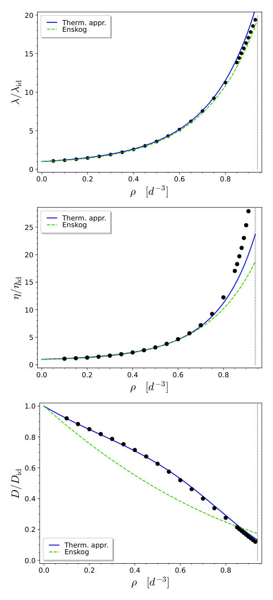
<figcaption class="paper-figure-caption"><b>Fig 1.</b> FIG. 1. Transport coefficients over their ideal value against particle density, ρ (units d−3, with d</figcaption>
</figure>
<figure class="paper-figure-card">
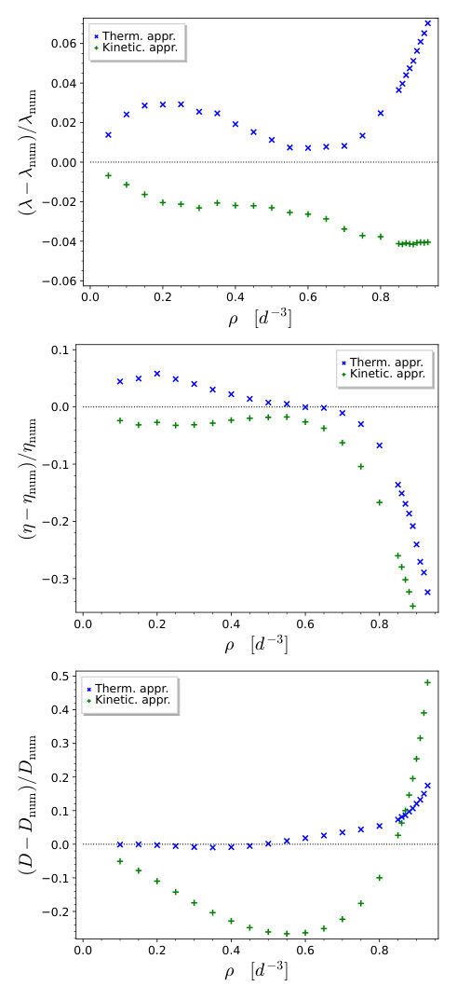
<figcaption class="paper-figure-caption"><b>Fig 2.</b> FIG. 2. Relative error of theoretical transport coefficients, relative to numerical values, against</figcaption>
</figure>
</div>

<p><strong>Summary.</strong> This paper develops and validates a purely thermodynamic theory for calculating transport coefficients in hard-sphere fluids. By relating these dynamic quantities to static, measurable thermodynamic properties, the authors show that their predictions for conductivity, viscosity, and self-diffusion significantly outperform traditional kinetic theories like Enskog's model. This work demonstrates the feasibility of describing complex fluid dynamics using only equilibrium statistical mechanics.</p>
<p><strong>Why it may be interesting.</strong> While focused on classical fluids, the methodology—linking dynamic transport properties directly to equilibrium thermodynamics via generalized fluctuation relations—is a powerful theoretical tool applicable to many-body quantum systems where such connections are sought.</p>
<details>
<summary>Detailed structure</summary>
<p><strong>Main problem.</strong> The primary goal is to develop a purely thermodynamic framework capable of predicting transport coefficients for hard-sphere fluids, thereby comparing its accuracy against established kinetic theories.</p>
<p><strong>Main result.</strong> The theory successfully predicts compact expressions for thermal conductivity, viscosity, and self-diffusion that quantitatively reproduce simulation data, significantly improving upon Enskog kinetic theory predictions for self-diffusion.</p>
<p><strong>Method.</strong> The approach generalizes the Onsager matrix formalism to relate transport coefficients ($\sigma$) to equilibrium thermodynamic properties via scaling relations derived from density variables.</p>
<p><strong>Model / system.</strong> The system studied is a hard-sphere fluid, analyzed using concepts from statistical mechanics and fluctuation-dissipation theorems. The analysis involves deriving relationships between real and ideal systems through generalized density variables.</p>
<p><strong>Key observables.</strong> Transport coefficients: thermal conductivity ($\lambda$), viscosity ($\eta$), and self-diffusion coefficient ($D$).</p>
<p><strong>Important parameters / regimes.</strong> Density ($
ho$), temperature ($T$), and the thermodynamic factor $\Gamma = rac{
ho}{T} (rac{\partial\mu}{\partial
ho})_T$. The comparison is made across various density regimes.</p>
<p><strong>Assumptions / limitations.</strong> Key assumptions include applying the Onsager matrix formalism, assuming local thermal equilibrium, and making approximations regarding constant-pressure conditions for certain derivations.</p>
<p><strong>Figures summary.</strong> Figures compare $\lambda$, $\eta$, and $D$ vs. density ($
ho$) between thermodynamic predictions and Enskog kinetic theory against numerical data points; a second figure shows the relative error of these coefficients versus density.</p>
<p><strong>Paper structure.</strong> The paper develops the framework by first introducing the general Onsager matrix, then deriving specific ratios for $\lambda$, $\eta$, and $D$ using scaling arguments based on thermodynamic variables. It concludes with quantitative comparisons against simulation data across different densities.</p>
</details>
<details>
<summary>Abstract</summary>
<p>A thermodynamic theory for transport coefficients in hard-sphere fluids is developed from a general expression for the Onsager matrix. The theory predicts the ratio $σ/σ_{\rm id}$, where $σ$ is a transport coefficient and $σ_{\rm id}$ denotes its dilute-gas value. This ratio depends exclusively on equilibrium thermodynamic properties and can therefore be computed directly from the equation of state. Compact expressions are obtained for the thermal conductivity, viscosity, and self-diffusion coefficient. These expressions quantitatively reproduce simulation data over almost the entire fluid range and, in the case of self-diffusion, significantly improve upon the predictions of Enskog kinetic theory. The results demonstrate that transport coefficients can be accurately described within a purely thermodynamic framework.</p>
</details>
<p><sub><a href="#top">↑ back to top</a></sub></p>

<p><a id="paper-2608.06359"></a></p>
<h3 id="bell-nonlocality-from-twisted-statistics"><a href="http://arxiv.org/abs/2608.06359v1">Bell nonlocality from twisted statistics</a></h3>
<p><strong>Authors:</strong> Ivana Đorđ ević, Jovan Potrebić, Aleksandra Gočanin, Dragoljub Gočanin<br>
<strong>Type:</strong> theory · <strong>Category:</strong> quantum information and computing · <strong>PDF:</strong> <a href="https://arxiv.org/pdf/2608.06359v1">https://arxiv.org/pdf/2608.06359v1</a><br>
<strong>Analysis basis:</strong> full PDF text, analyzed in chunks
<strong>Topic relevance:</strong> <code>entanglement &amp; information structure</code> <strong>2/5</strong> · <code>Keldysh / 2PI / non-Gaussian methods</code> <strong>1/5</strong></p>
<div class="figure-strip-hint">↔ Scroll figures horizontally</div>
<div class="paper-figures-scroll">
<figure class="paper-figure-card">
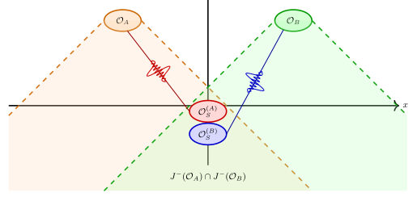
<figcaption class="paper-figure-caption"><b>Fig 1.</b> FIG. 1. A schematic representation of the relativistic Bell protocol. Alice and Bob reside in their space-like separated laboratories OA and OB, respectively. The source coupled to the dressed quantum field generates excitations in time- ordered preparation regions O(B) S and O(B) S belonging to the common causal past of OA and OB. The excitations are ar- ranged to propagate towards OB and OA, respectively. Each signal is a single-particle excitation in a state of quantum su- perposition of two orthogonal wave-packets.</figcaption>
</figure>
</div>

<p><strong>Summary.</strong> This work explores how noncommutative spacetime geometry, modeled by 'twisted statistics' in a free scalar field, can generate genuine Bell nonlocality. By analyzing the resulting two-particle state correlations, the authors show that measuring violations of the CHSH inequality serves as an operational signature for the underlying NC structure. This bridges quantum gravity phenomenology with fundamental tests of quantum foundations.</p>
<p><strong>Why it may be interesting.</strong> It connects fundamental concepts of spacetime geometry (noncommutativity) directly to quantum information resources (Bell nonlocality), offering a novel theoretical tool for probing physics beyond standard QFT assumptions.</p>
<details>
<summary>Detailed structure</summary>
<p><strong>Main problem.</strong> Investigating whether Bell nonlocality can emerge from a quantum field theory structure modified by noncommutative (NC) spacetime geometry through 'twisted statistics.'</p>
<p><strong>Main result.</strong> The violation of the CHSH Bell inequality ($S > 2$) is predicted, providing an operational probe for the underlying NC structure encoded in the multiparticle sector.</p>
<p><strong>Method.</strong> The analysis uses a relativistic Bell protocol setup involving two spacelike-separated laboratories and calculates the CHSH parameter based on state preparation governed by twisted statistics.</p>
<p><strong>Model / system.</strong> A free real quantum scalar field propagating on the noncommutative Moyal plane. The deformation is introduced via twisted multiparticle statistics, which modifies the exchange symmetry of creation/annihilation operators.</p>
<p><strong>Key observables.</strong> Violation of the CHSH Bell inequality ($S_	heta$), and the non-local phase $\chi_	heta$ governing the entanglement.</p>
<p><strong>Important parameters / regimes.</strong> The noncommutative parameter $  heta$, which controls the magnitude of the violation; the momentum separations ($\Delta p, \Delta q$).</p>
<p><strong>Assumptions / limitations.</strong> The state preparation is assumed to be local and causal, involving sequential pulses from a source in the common causal past.</p>
<p><strong>Figures summary.</strong> Figure 1 schematically illustrates the relativistic Bell protocol setup used for testing nonlocality.</p>
<p><strong>Paper structure.</strong> The paper develops the theory by first introducing the NC deformation via twisted statistics (modifying the coproduct/exchange symmetry), then applying this to a two-particle state preparation in a spacelike separated Bell test, and finally calculating the resulting CHSH violation.</p>
</details>
<details>
<summary>Abstract</summary>
<p>We investigate Bell correlations for a free real quantum scalar field on the noncommutative Moyal plane. Although the free field dynamics and the one-particle sector remain unchanged, the deformation enters through twisted multiparticle statistics and its Fock-space dressing representation. A classical external source coupled locally to the twist-dressed quantum field prepares coherent superpositions of momentum-pair configurations propagating toward two spacelike-separated laboratories. The momentum-dependent twist phases are generally nonfactorizable and generate entanglement between the corresponding wave-packet modes. We show that suitable local mode measurements lead to a violation of the CHSH Bell inequality. The resulting correlations provide an operational probe of the noncommutative structure encoded in the multiparticle sector of the quantum field.</p>
</details>
<p><sub><a href="#top">↑ back to top</a></sub></p>

<p><a id="paper-2608.05775"></a></p>
<h3 id="robust-logarithmic-lower-bound-on-shared-resource-cost-for-math656math-routing"><a href="http://arxiv.org/abs/2608.05775v1">Robust logarithmic lower bound on shared-resource cost for $f$-routing</a></h3>
<p><strong>Authors:</strong> Kevin Bogner<br>
<strong>Type:</strong> theory · <strong>Category:</strong> quantum information and computing · <strong>PDF:</strong> <a href="https://arxiv.org/pdf/2608.05775v1">https://arxiv.org/pdf/2608.05775v1</a><br>
<strong>Analysis basis:</strong> full PDF text, analyzed in chunks
<strong>Topic relevance:</strong> <code>entanglement &amp; information structure</code> <strong>2/5</strong> · <code>Keldysh / 2PI / non-Gaussian methods</code> <strong>1/5</strong></p>
<div class="figure-strip-hint">↔ Scroll figures horizontally</div>
<div class="paper-figures-scroll">
<figure class="paper-figure-card">
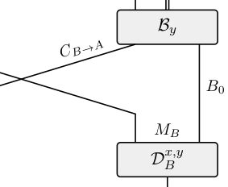
<figcaption class="paper-figure-caption"><b>Fig 1.</b> Figure 1. One round of f-routing. Time runs downward. Alice receives x and the qubit Q, Bob receives y, and they share the state ρLR prepared before the inputs arrive. Double lines carry the classical inputs. Alice applies Ax to QL, keeps A0, and sends the message CA→B. Bob applies By to R, keeps B0, and sends CB→A. The messages cross simultaneously. If f(x, y) = 0, Alice applies Dx,y A to MA = A0CB→A and outputs the qubit. If f(x, y) = 1, Bob applies Dx,y B to MB = B0CA→B.</figcaption>
</figure>
</div>

<p><strong>Summary.</strong> This paper establishes a strong logarithmic lower bound on the shared quantum resource cost required for $f$-routing in one round. By analyzing the protocol's success using advanced tools like state differences and matrix rank bounds, it proves that the required resource dimension scales as $\Omega(n/\log n)$. The result is significant because it quantifies fundamental limitations in distributed quantum computation protocols.</p>
<p><strong>Why it may be interesting.</strong> This work provides a rigorous quantum information-theoretic lower bound on communication complexity, which is fundamental to understanding the limits of distributed quantum computation and secure multi-party tasks.</p>
<details>
<summary>Detailed structure</summary>
<p><strong>Main problem.</strong> The paper determines a robust logarithmic lower bound on the shared-resource cost required for performing $f$-routing in a one-round quantum communication protocol.</p>
<p><strong>Main result.</strong> For the inner product modulo 2 function, the shared resource dimension must satisfy $  ext{Edim}(
ho_{LR}) \ge \log_2 n - \log_2 \log_2 n - O(1)$.</p>
<p><strong>Method.</strong> The proof involves converting protocol correctness into rank bounds for matrices derived from quantum state differences (e.g., using the SLD quadratic form) and applying techniques like Fourier expansion and sign-rank analysis.</p>
<p><strong>Model / system.</strong> The model is a one-round $f$-routing task where Alice and Bob share an arbitrary mixed state $
ho_{LR}$ and exchange messages based on inputs ($x, y$) and an unknown qubit. The cost is measured by the logarithm of the smaller marginal support dimension.</p>
<p><strong>Key observables.</strong> The primary observables are the trace-norm difference ($\|
ho_0^{x,y} - 
ho_1^{x,y}\|_1$) and the SLD quadratic form $\chi(x, y)$, which quantify how much the protocol's success depends on the shared state.</p>
<p><strong>Important parameters / regimes.</strong> The key parameters are $n$ (the length of the input strings) and $d = \min\{	ext{rank } 
ho_L, 	ext{rank } 
ho_R\}$, which dictates the resource cost $    ext{Edim}(
ho_{LR})$.</p>
<p><strong>Assumptions / limitations.</strong> The analysis assumes a worst-case error bound of at most 0.09 in both routing cases and relies on approximating complex rank bounds using techniques like Chebyshev polynomials.</p>
<p><strong>Figures summary.</strong> Figure 1 illustrates the general flow of the one-round $f$-routing protocol, showing the initial shared state preparation followed by simultaneous message exchange.</p>
<p><strong>Paper structure.</strong> The paper develops its argument by first establishing necessary conditions via information-disturbance tradeoffs (Chunk 2), then refining these bounds using matrix rank analysis and Fourier expansions (Chunk 3), culminating in the specific lower bound for $f$-routing with $ ext{IP}_n \pmod{2}$ (Chunk 1 &amp; 3).</p>
</details>
<details>
<summary>Abstract</summary>
<p>In one-round $f$-routing, Alice receives an $n$-bit string and an unknown qubit, while Bob receives another $n$-bit string. They exchange one simultaneous message each, and the value of $f$ determines which party must recover the qubit. Message lengths, local systems, and local operations are unrestricted. We charge only $E_{\dim}(ρ_{LR})=\log_2\min\{\operatorname{rank}ρ_L,\operatorname{rank}ρ_R\}$, the logarithm of the smaller marginal support dimension of the shared state prepared before the inputs arrive. The state may be arbitrary and mixed. For the inner product modulo $2$, we prove that every protocol with worst-case error at most $0.09$ in both routing cases, measured in the full, unhalved diamond norm, satisfies $d\log_2(2d)=Ω(n)$ for $d=\min\{\operatorname{rank}ρ_L,\operatorname{rank}ρ_R\}$. Thus $d=Ω(n/\log n)$ and $E_{\dim}(ρ_{LR})\ge\log_2 n-\log_2\log_2 n-O(1)$. The closest earlier growing Schmidt-rank lower bound for an explicit routing function assumes zero error in one routing case. Our proof converts correctness into a matrix whose entries have a constant gap between the two routing cases. It approximates this matrix by one whose rank depends on $d$, but not on the dimensions of messages or local systems. A sign-rank lower bound for the matrix of the inner product modulo $2$ completes the argument. A lower bound polynomial in $n$ on $E_{\dim}$ remains open.</p>
</details>
<p><sub><a href="#top">↑ back to top</a></sub></p>

<p><a id="paper-2608.05271"></a></p>
<h3 id="cluster-state-witnesses-of-finite-speed-hidden-influences"><a href="http://arxiv.org/abs/2608.05271v1">Cluster-State Witnesses of Finite-Speed Hidden Influences</a></h3>
<p><strong>Authors:</strong> Weikang Li, Mengyao Hu, Dong-Ling Deng, Valerio Scarani<br>
<strong>Type:</strong> theory · <strong>Category:</strong> quantum information and computing · <strong>PDF:</strong> <a href="https://arxiv.org/pdf/2608.05271v1">https://arxiv.org/pdf/2608.05271v1</a><br>
<strong>Analysis basis:</strong> full PDF text, analyzed in chunks
<strong>Topic relevance:</strong> <code>entanglement &amp; information structure</code> <strong>2/5</strong></p>
<div class="figure-strip-hint">↔ Scroll figures horizontally</div>
<div class="paper-figures-scroll">
<figure class="paper-figure-card">
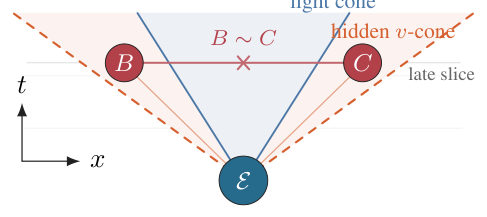
<figcaption class="paper-figure-caption"><b>Fig 1.</b> FIG. 1. Finite-speed causality geometry. The blue solid lines de- note the ordinary light cone, whereas the orange dashed lines de- note the wider hidden v-cone associated with a finite influence speed v &gt; c in the preferred frame. The set E denotes the early side, whose measurement event(s) may influence both late parties B and C through the hidden influence. The late events are arranged out- side each other’s hidden v-cones, denoted by B ∼C, so no hidden influence can propagate between them during a run. Consequently, conditioned on every non-null input–output event on E, the BC dis- tribution must be Bell-local.</figcaption>
</figure>
<figure class="paper-figure-card">
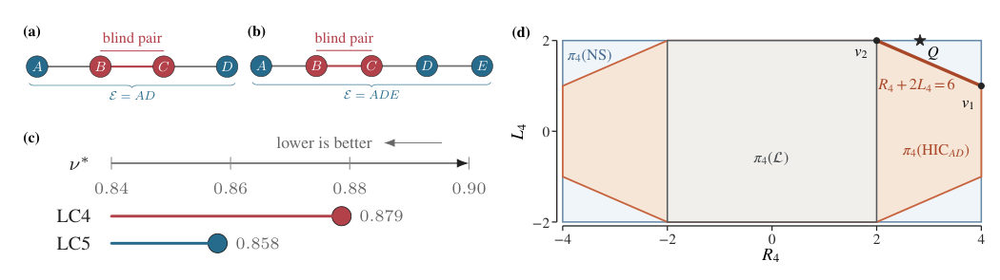
<figcaption class="paper-figure-caption"><b>Fig 2.</b> FIG. 2. Linear-cluster witnesses, visibility, and illustrative HIC projection. (a) LC4 uses the four-qubit chain with early side E = AD and blind late pair B, C. (b) LC5 appends E, giving E = ADE with the same blind pair. The BC link in each panel denotes a graph-state edge, not a causal connection; no witness term contains both B and C. (c) Ideal white-noise visibility, given by the ratio of the HIC bound to the quantum value SQ, with lower values indicating greater noise tolerance. (d) LC4 projection π4(P) := (R4(P), L4(P)). The fully Bell-local set L, hidden-influence set HICAD, and no-signaling set NS project to the inner square, intermediate octagon, and outer rectangle, respectively....</figcaption>
</figure>
</div>

<p><strong>Summary.</strong> The paper develops novel witnesses based on linear cluster states to test theories involving hidden influences that travel at a finite speed. By formulating this constraint as a polytope separation problem, the authors derive specific four- and five-qubit inequalities that violate these hypothetical models if measured values exceed theoretical bounds. This establishes cluster graph states as powerful resources for testing causality.</p>
<p><strong>Why it may be interesting.</strong> This work provides concrete, experimentally friendly quantum resources (linear cluster states) for testing fundamental assumptions about causality in physics beyond standard Bell tests, which is highly relevant to foundational quantum information theory.</p>
<details>
<summary>Detailed structure</summary>
<p><strong>Main problem.</strong> To formulate a testable constraint for hidden influences that propagate at a finite speed, extending beyond standard Bell tests.</p>
<p><strong>Main result.</strong> The authors derive new four- and five-partite witnesses using linear cluster states that certify bounds on these finite-speed hidden influence models.</p>
<p><strong>Method.</strong> The problem is formulated as a projected-polytope separation problem for cluster-state correlations, utilizing linear programming to find facet-defining inequalities.</p>
<p><strong>Model / system.</strong> The model considers hidden influences propagating at a finite speed (v) in a preferred frame, leading to constraints on multipartite spacetime arrangements. The quantum resource used is the linear cluster state ($|	ext{LC4}
angle$ and $|	ext{LC5}
angle$).</p>
<p><strong>Key observables.</strong> Witness values $S_4$ and $S_5$, HIC bounds ($\le 6$ and $\le 10$), and ideal white-noise visibilities ($
u^*$).</p>
<p><strong>Important parameters / regimes.</strong> Finite speed $v$, number of parties (four or five qubits), and the specific structure of the cluster graph state.</p>
<p><strong>Assumptions / limitations.</strong> The analysis assumes measurement independence, no postselection, and that the exposed faces are facets of the projected hidden-influence polytopes.</p>
<p><strong>Figures summary.</strong> Figures illustrate the finite-speed causality geometry (v-cone vs. light cone) and show projections of the full polytope onto lower-dimensional spaces defined by the witnesses.</p>
<p><strong>Paper structure.</strong> The paper progresses from defining the physical constraint (HIC) to formulating it as a polytope separation problem, deriving specific cluster-state witnesses ($S_4, S_5$), proving their facet status using optimization techniques, and calculating quantitative bounds and visibilities.</p>
</details>
<details>
<summary>Abstract</summary>
<p>Bell experiments rule out local common-cause explanations of quantum correlations, yet they do not exclude hidden influences that travel faster than light while still having a finite speed in a preferred frame. Multipartite spacetime arrangements turn this possibility into a constraint: two late parties that are outside each other's hidden-influence cones must remain Bell-local once the earlier events are fixed. Here, we formulate this constraint as a projected-polytope separation problem for cluster-state correlations, using only marginal data containing at most one late party. From linear cluster states, we construct a four-qubit witness with the bound $S_4\le 6$ and quantum value $4+2\sqrt2$, and a five-qubit witness with $S_5\le 10$ and quantum value $6+4\sqrt2$. We certify that the exposed faces are facets of the corresponding projected hidden-influence polytopes. These results identify linear-cluster graph states as certifiable and experimentally friendly resources for finite-speed hidden-influence tests.</p>
</details>
<p><sub><a href="#top">↑ back to top</a></sub></p>

<p><a id="paper-2608.05556"></a></p>
<h3 id="local-spin-excitations-mediate-quasiparticle-breakdown-in-the-orbital-selective-mott-phase"><a href="http://arxiv.org/abs/2608.05556v1">Local Spin Excitations Mediate Quasiparticle Breakdown in the Orbital-Selective Mott Phase</a></h3>
<p><strong>Authors:</strong> Yuekun Niu, Yu Ni, Jia-Ming Wang, Zhong-Yi Lu, Yun Song, Shiping Feng<br>
<strong>Type:</strong> theory · <strong>Category:</strong> strongly correlated electrons · <strong>PDF:</strong> <a href="https://arxiv.org/pdf/2608.05556v1">https://arxiv.org/pdf/2608.05556v1</a><br>
<strong>Analysis basis:</strong> full PDF text, analyzed in chunks
<strong>Topic relevance:</strong> <code>Keldysh / 2PI / non-Gaussian methods</code> <strong>1/5</strong> · <code>Kondo &amp; dissipative impurity</code> <strong>1/5</strong> · <code>analog quantum simulation</code> <strong>1/5</strong> · <code>exotic spin models in light-matter</code> <strong>1/5</strong> · <code>spintronics-quantum-optics interface</code> <strong>1/5</strong></p>
<div class="figure-strip-hint">↔ Scroll figures horizontally</div>
<div class="paper-figures-scroll">
<figure class="paper-figure-card">

<figcaption class="paper-figure-caption"><b>Fig 1.</b> FIG. 2. Evolution of the LSE spectra across the Mott tran- sition. Left column: the LSE spectrum of NB (green dashed lines) superimposed on the DOS of WB (red solid lines); Right column: the LSE spectrum of WB (pink dashed lines) super- imposed on DOS of NB (blue solid lines). (a) and (b) Metallic phase at U = 2.00; (c) and (d) OSMP at U = 3.00; (e) and (f) Insulating phase at U = 4.00. The model parameters are J = U/4 and R = 0.5. The LSE spectral weight shifts to the Fermi level only in the OSMP, signaling the emergence of the interorbital coupling.</figcaption>
</figure>
<figure class="paper-figure-card">

<figcaption class="paper-figure-caption"><b>Fig 2.</b> FIG. 1. LSEs in OSMP: (a) The LTQF of the WB (red solid line) and NB (blue dotted line) are plotted against Coulomb interaction U. The Mott critical point of WB is Uc1 = 3.74, while that of NB is Uc2 = 2.62; (b) DOS (red solid line) of WB and the LSE spectrum Alse(ω) (green dotted line) of NB at U = 3.50 (inside the OSMP); (c) The DOS (blue solid line) of NB and the LSE spectrum (pink dotted line) of WB at the same U. The model parameters are J = U/4 and R = 0.5. The LSE peaks at the Fermi level in the NB Mott gap provide a low-energy channel for interorbital charge fluctuations.</figcaption>
</figure>
<figure class="paper-figure-card">

<figcaption class="paper-figure-caption"><b>Fig 3.</b> FIG. 3. Role of Hund’s coupling components in generating LSEs. (a)-(c) Results for Jph = 0 and Jsf = Jz = U/4. (a) LTQF versus U showing non-half-integer values in the OSMP (Uc1 = 3.74, Uc2 = 2.58); (b) LSE spectrum of the NB (green dashed) and DOS of the WB (red solid); (c) LSE spectrum of the WB (pink dashed) and DOS of the NB (blue solid); (d)-(f) Results for Jph = U/4 and Jsf = Jz = 0. (d) LTQF versus U showing exact Lo1 = 0 and Lo2 = 0.5 in the OSMP (Uc1 = 7.21, Uc2 = 4.00); (e) and (f) Complete absence of LSE spectra, confirming the conventional decoupled OSMP. All results are obtained for R = 0.5. The comparison demon- strates that Jsf and Jz are essential for generating LSEs and...</figcaption>
</figure>
<figure class="paper-figure-card">

<figcaption class="paper-figure-caption"><b>Fig 4.</b> FIG. 1. Schematic diagram of LSE bound states. WB is represented by a thicker red line and NB by a thinner blue line. The dashed box encloses the LSE bound state. The “others” in the figure correspond to other potential low-energy excited states.</figcaption>
</figure>
<figure class="paper-figure-card">

<figcaption class="paper-figure-caption"><b>Fig 5.</b> FIG. 2. Effect of the Coulomb interaction U for the excitation spectrum of LSE ALSE α (ω) in different phases. The metal phase for U = 1.0 (gray and brown dashed lines), OSMP for U = 2.80, 3.00, 3.20, 3.40, 3.60 (cyan and green solid lines), the insulating phase for U = 3.80 (yellow and pink dashed lines), where the spectrum has been normalized by summation. The model parameters are J = U/4 and R = 0.5.</figcaption>
</figure>
</div>

<p><strong>Summary.</strong> This theoretical work investigates why quasiparticles break down in the Orbital-Selective Mott Phase (OSMP) using DMFT on a two-band Hubbard model. The key finding is that this breakdown is driven by Local Spin Excitations (LSEs), which are generated by specific components of Hund's coupling. Removing these LSE pathways restores coherent, well-defined quasiparticle behavior.</p>
<p><strong>Why it may be interesting.</strong> The concept of LSE-mediated dynamic coupling provides a concrete, microscopic mechanism for correlated electron phenomena like quasiparticle breakdown, which is highly relevant to understanding strongly interacting quantum materials.</p>
<details>
<summary>Detailed structure</summary>
<p><strong>Main problem.</strong> The study aims to uncover the microscopic mechanism responsible for quasiparticle breakdown observed in the Orbital-Selective Mott Phase (OSMP), moving beyond simple models of decoupled orbitals.</p>
<p><strong>Main result.</strong> The authors identify that electronic coupling mediated by Local Spin Excitations (LSEs)—specifically those generated by the spin-flip and Ising components of Hund's coupling—is the fundamental mechanism driving this quasiparticle breakdown in the OSMP.</p>
<p><strong>Method.</strong> Dynamical Mean-Field Theory (DMFT) is employed to analyze the two-band Hubbard model, calculating spectral functions and correlation metrics across different interaction regimes.</p>
<p><strong>Model / system.</strong> The system is modeled using a two-band Hubbard Hamiltonian on a Bethe lattice. The interactions include Coulomb repulsion ($U$) and Hund's coupling terms ($J_{sf}, J_z$), which are varied to isolate their physical roles.</p>
<p><strong>Key observables.</strong> Local Spin Excitations (LSE) spectral function ($  ext{ALSE}(\omega)$), Local Two-Qubit Fidelity (LTQF), and the orbital Density of States ($
ho_\alpha(\omega)$).</p>
<p><strong>Important parameters / regimes.</strong> The critical parameters are the interaction strengths ($U, J_{sf}, J_z$) and the system's filling level, particularly focusing on the OSMP regime.</p>
<p><strong>Assumptions / limitations.</strong> The analysis utilizes DMFT applied to an effective single-impurity model; some derivations rely on Hartree-Fock approximations for analytical insight.</p>
<p><strong>Figures summary.</strong> Figures illustrate the evolution of the LSE spectrum across different interaction strengths, showing a sharp weight transfer to the Fermi level only within the OSMP regime. LTQF values are used to diagnose deviations from ideal metallic or insulating states.</p>
<p><strong>Paper structure.</strong> The paper establishes the physical problem (OSMP breakdown), develops theoretical tools (DMFT, LSE definition), calculates observables across varying Hund's coupling components, and concludes by linking the observed spectral weight transfer directly to LSE mediation.</p>
</details>
<details>
<summary>Abstract</summary>
<p>The orbital-selective Mott phase (OSMP) is commonly described as a coexistence of localized and itinerant electrons within effectively decoupled orbitals, but emerging evidence for quasiparticle breakdown points to physics beyond this picture, whose microscopic origin remains unknown. Using dynamical mean-field theory for the two-band Hubbard model, we show that the spin-flip and Ising-type components of Hund's coupling generate local spin excitations (LSEs). These LSEs couple electrons between different orbitals, renormalize quasiparticle lifetimes and binding energies, and thereby destroy well-defined quasiparticles in the OSMP. Removing these two components of Hund's coupling restores coherent quasiparticle behavior and fully decouples the charge dynamics of the two bands. Our results therefore identify electronic coupling to LSEs as the fundamental mechanism driving quasiparticle breakdown within the OSMP.</p>
</details>
<p><sub><a href="#top">↑ back to top</a></sub></p>

<p><a id="paper-2608.05388"></a></p>
<h3 id="next-generation-of-ultra-coarse-graining-self-consistent-inference-of-critical-internal-states"><a href="http://arxiv.org/abs/2608.05388v1">Next Generation of Ultra-Coarse-Graining: Self-Consistent Inference of Critical Internal States</a></h3>
<p><strong>Authors:</strong> Weizhi Xue, Xiao Shuai, Gregory A. Voth<br>
<strong>Type:</strong> theory · <strong>Category:</strong> statistical mechanics · <strong>PDF:</strong> <a href="https://arxiv.org/pdf/2608.05388v1">https://arxiv.org/pdf/2608.05388v1</a><br>
<strong>Analysis basis:</strong> full PDF text, analyzed in chunks
<strong>Topic relevance:</strong> <code>Keldysh / 2PI / non-Gaussian methods</code> <strong>1/5</strong> · <code>analog quantum simulation</code> <strong>1/5</strong> · <code>correlated / nonlocal dissipation</code> <strong>1/5</strong> · <code>driven-dissipative phase transition</code> <strong>1/5</strong> · <code>methods for driven-dissipative</code> <strong>1/5</strong></p>
<div class="figure-strip-hint">↔ Scroll figures horizontally</div>
<div class="paper-figures-scroll">
<figure class="paper-figure-card">

<figcaption class="paper-figure-caption"><b>Fig 1.</b> FIG. 1. Overview of SC-UCG simulation. (a) Message construction in SC-UCG compared with RLE- UCG. RLE-UCG directly uses purely geometric edge attributes {𝑟!=} for message passing, while SC-UCG</figcaption>
</figure>
<figure class="paper-figure-card">

<figcaption class="paper-figure-caption"><b>Fig 2.</b> FIG. 2. Overview of SC-UCG training methodology. (a) Flowchart for the SC-UCG workflow for constructing an SC-UCG forcefield. Green boxes and arrows denote data construction steps and input direction; blue boxes and arrow denote model optimization. (b) Multilayer Internal State Consistency (MISC) training by concatenating outputs from different layers. (c) UCG-REM fine-tuning and ISC can be understood in terms of optimizing marginal and conditional distributions, respectively, of the joint distribution in the real space and the internal state space.</figcaption>
</figure>
<figure class="paper-figure-card">

<figcaption class="paper-figure-caption"><b>Fig 3.</b> FIG. 3. Illustration of the chiral transition system as application.</figcaption>
</figure>
<figure class="paper-figure-card">

<figcaption class="paper-figure-caption"><b>Fig 4.</b> FIG. 4. Forcefields, internal state classification, and state-wise distribution during SC-UCG training. (a)-(b) Learned (a) homochiral (D-D and L-L) and (b) heterochiral (D-L) CG interaction 𝑈xyd after REM phase, MISC training phase (Iteration 400), and UCG-REM fine-tuning phase (Iteration 40), respectively. Inference layers were varied between mean-field (MF) and Bethe. (c) MISC loss, averaged by frame, during MISC training phase. The shaded regions represent (d) Internal state prediction accuracy during MISC training phase. (e) Internal-state-specific radial distribution function (ISS-RDF) for homochiral pairs (D-D</figcaption>
</figure>
<figure class="paper-figure-card">

<figcaption class="paper-figure-caption"><b>Fig 5.</b> FIG. 5. Emergence of collective chiral transitions during UCG-REM fine-tuning. (a) Time histograms for the system average of enantiomer excess, 𝐻(〈𝑒𝑒〉G), through UCG-REM iterations, starting from the MISC forcefield. The histogram densities were normalized with 𝑝MkN = 1 (yellow) and 𝑝M!$ = 0 (black). The histograms were stacked horizontally to reflect per-iteration changes. The green dashed lines represent the time-averaged absolute value (symmetrized for better comparison) of enantiomer excess in the all-atom ensemble 〈𝑒𝑒〉zz . The blue dashed lines represent the most probable 〈𝑒𝑒〉 value in the symmetrized histogram from the all-atom data, |𝑒𝑒|[,zz. The green histograms on the right...</figcaption>
</figure>
</div>

<p><strong>Summary.</strong> This work introduces Self-Consistent Ultra-Coarse-Graining (SC-UCG) to improve molecular simulations by accurately handling complex internal states. It bypasses the need for manually defined collective variables by deriving state probabilities self-consistently using graph neural networks trained via relative entropy minimization. This allows for robust simulation of phase transitions in systems like biomolecular tetramers.</p>
<p><strong>Why it may be interesting.</strong> The self-consistent treatment of discrete 'internal states' within a continuum framework is highly relevant for modeling quantum or near-quantum degrees of freedom in condensed matter systems where simple mean-field approximations fail.</p>
<details>
<summary>Detailed structure</summary>
<p><strong>Main problem.</strong> The primary challenge is overcoming information loss during coarse-graining (CG) that prevents accurate sampling of complex, multistate phenomena in molecular dynamics simulations.</p>
<p><strong>Main result.</strong> The proposed Self-Consistent UCG (SC-UCG) method successfully captures collective switching of internal states and accurately reproduces phase transitions even when trained on data from a single temperature.</p>
<p><strong>Method.</strong> It introduces SC-UCG, which self-consistently infers internal state probabilities using graph message passing derived from minimizing relative entropy. The training utilizes the Multilayer Internal State Consistency (MISC) framework via graph backpropagation.</p>
<p><strong>Model / system.</strong> The method is applied to a model tetramer system exhibiting a second-order symmetry-breaking phase transition between supercritical racemic and subcritical D/L-rich fluid phases.</p>
<p><strong>Key observables.</strong> Internal state probabilities, collective switching events, and the order parameter characterizing the phase transition.</p>
<p><strong>Important parameters / regimes.</strong> Temperature (T), coupling strengths derived from UCG interactions, and the structure of the internal states.</p>
<p><strong>Assumptions / limitations.</strong> The core approximation is that the system can be modeled as a mixed ensemble where internal state probabilities are determined self-consistently without relying on pre-defined collective variables (CVs).</p>
<p><strong>Figures summary.</strong> Not specified in the notes, but the application demonstrates capturing phase transitions and state switching.</p>
<p><strong>Paper structure.</strong> The paper builds from foundational bottom-up CG theory to introduce SC-UCG as an advancement over RLE approximations. It details the variational derivation leading to a message-passing form (ISC layer) for internal state inference, followed by training via MISC and application to phase transition simulations.</p>
</details>
<details>
<summary>Abstract</summary>
<p>Bottom-up coarse-graining expands the length and time scales accessible to molecular dynamics (MD) simulations, but information loss can hinder accurate representation of multistate phenomena in complex biomolecular dynamics. Ultra-Coarse-Graining (UCG) projects discrete "quantum-like" extended degrees of freedom, or "internal states," onto coarse-grained (CG) molecules, extending CG model expressiveness. The rapid-local-equilibrium (RLE) approximation in UCG depends on user-defined collective variables (CVs, e.g., local density) and neglects correlations between internal states within and between CG molecules. We present Self-Consistent UCG (SC-UCG), which uses the underlying UCG interactions directly to assign internal states without designing CVs in the CG ensemble. During simulation, internal state probabilities are determined self-consistently through graph message passing. We enhance the RLE Hamiltonian with the Bethe approximation and AI-based inference to represent explicit correlations between UCG beads. For force-field training, we develop Multilayer Internal State Consistency (MISC), a machine-learning method derived from relative entropy minimization that avoids iterative sampling of intermediate force fields. We apply SC-UCG to a tetramer exhibiting a second-order symmetry-breaking phase transition from a supercritical racemic fluid to subcritical D-rich and L-rich fluids. SC-UCG captures collective switching of internal states in the subcritical region and recapitulates the phase transition across temperatures, despite being trained on a single-temperature dataset.</p>
</details>
<p><sub><a href="#top">↑ back to top</a></sub></p>
<hr>
<p>
<a href="index.html">← Index</a>
 · <a href="papers_03.html">← Previous</a> · <a href="papers_05.html">Next →</a>
</p>
<hr>

</body>
</html>
